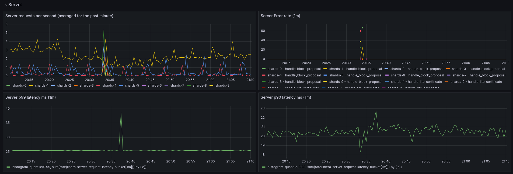

The Linera Manual
Welcome to the reference manual of Linera, the decentralized protocol for real-time Web3 applications.
This documentation is split into three main parts:
-
The first section gives a high-level overview of the protocol.
-
The second section is intended for developers building applications using the Linera Rust SDK.
-
The third section is intended for operators who wish to run Linera validators.
NEW: Publish and test your Web3 application on the Linera Testnet!
Install the Linera CLI tool then follow the instructions on this page to claim a microchain and publish your first application on the current Testnet.
To join our community and get involved in the development of the Linera ecosystem, check out our GitHub repository, our Website, and find us on social media channels such as YouTube, X, Telegram, and Discord.
You can also find high-level introductory and extended concepts discussed and explained in video format in our Developer Workshops series on YouTube.
Let's get started!
Overview
Linera is a decentralized protocol optimized for real-time, agentic Web3 applications that require guaranteed performance for an unlimited number of active users.
The core idea of the Linera protocol is to run many chains of blocks, called microchains, in parallel in one set of validators.
How do microchains work?
Linera users propose blocks directly to the chains that they own. Chains may also be shared with other users. Linera validators ensure that all blocks are validated and finalized in the same way across all the chains.
flowchart LR
user(["User wallet"])
provider(["Provider"])
validators(["Validators"])
subgraph "Validators"
chain1["Personal chain"]
chain2["Temporary chain"]
chain3["Public chain"]
chain4["App chain"]
end
user -- owns --> chain1
user -- shares --> chain2
validators -- own --> chain3
provider -- owns/shares --> chain4
%% Styling
style Validators fill:#1A4456,stroke:#70D4D3,stroke-width:2px,stroke-dasharray:3 3,rx:10,ry:10
style user fill:#8B7355,stroke:#EDE4D2,stroke-width:2px
style provider fill:#A0736B,stroke:#D2E8C8,stroke-width:2px
style chain1 fill:#3A6B7A,stroke:#A0E3E2,stroke-width:2px
style chain2 fill:#5A8269,stroke:#D2E8C8,stroke-width:2px
style chain3 fill:#4A5A60,stroke:#F3EEE2,stroke-width:2px
style chain4 fill:#4A7B75,stroke:#70D4D3,stroke-width:2px
While validation rules and security assumptions are the same for all chains, block production in each chain can be configured in a number of ways. In practice, most chains fall into the following categories:
- Personal chains (aka. user chains”) are those with a single owner, i.e. a single user proposing blocks.
- Temporary chains are shared between a few users.
- Public chains, usually dedicated to a particular task in the Linera infrastructure, are fully managed by Linera validators.
- Chains dedicated to a particular application, called app chains, may use either their own infrastructure for block production, a permissionless solution using proof-of-work, or a rotating set of trusted providers.
In order to validate all the chains reliably and at minimal cost, Linera validators are designed to be elastic, meaning that they can independently add or remove computational power (e.g. cloud workers) on demand whenever needed. In turn, this allows Linera applications to scale horizontally by distributing work to the microchains of their users.
What makes Linera real-time and agent-friendly?
Connected clients
To propose blocks and provide APIs to frontends, Linera users rely on a Linera client. Clients synchronize on-chain data in real-time, without trusting third parties, thanks to local VMs and Linera’s native support for notifications. Clients are sparse in the sense that they track only the chains relevant to a particular user.
flowchart LR
subgraph user_device["User device"]
ui["Web UI or AI agent"]
ui <-- GraphQL --> user_local
subgraph linera_client["Linera client"]
user_local["user chain"]
admin_local["admin chain"]
end
end
user_local <-- sync blocks --> user_remote
user_remote -- notify incoming messages --> user_local
admin_local <-- sync blocks --> admin_remote
subgraph validators_clients["Validators"]
user_remote["user chain"]
admin_remote["admin chain"]
end
%% Styling
style user_device fill:#1A4456,stroke:#70D4D3,stroke-width:2px,stroke-dasharray:3 3,rx:10,ry:10
style linera_client fill:#0e2630,stroke:#A0E3E2,stroke-width:1px,stroke-dasharray:2 2,rx:8,ry:8
style validators_clients fill:#1A4456,stroke:#70D4D3,stroke-width:2px,stroke-dasharray:3 3,rx:10,ry:10
style ui fill:#8B7355,stroke:#EDE4D2,stroke-width:2px
style user_local fill:#3A6B7A,stroke:#A0E3E2,stroke-width:2px
style admin_local fill:#3A6B7A,stroke:#A0E3E2,stroke-width:2px
style user_remote fill:#4A5A60,stroke:#F3EEE2,stroke-width:2px
style admin_remote fill:#4A5A60,stroke:#F3EEE2,stroke-width:2px
User interfaces interact with Linera applications by querying and sending high-level commands to local GraphQL services running securely inside the Linera client.
Similarly, discussions between AI agents and Linera applications stay local, hence private and free of charge. This also protects agents against compromised external RPC services.
Linera is the first Layer-1 to allow trustless real-time synchronization of user data on their devices, democratizing low-latency data access and bringing professional-grade security to frontends, customized oracle networks, and AI-trading agents.
Geographic sharding
In the future, Linera validators will be incentivized to operate machines and maintain a presence in a number of key regions. Most microchains will be pinned explicitly to a specific region, giving users of this region the lowest latency possible in their on-chain interactions. Linera validators will be incentivized to connect their regional data-centers using a low-latency network.
flowchart LR
subgraph region_1["Region 1"]
user1(["User 1"])
chain1["chain 1"]
chain2["chain 2"]
end
subgraph region_2["Region 2"]
chain3["chain 3"]
chain4["chain 4"]
end
user1 --> chain1
chain1 <--> chain2
chain2 <---> chain3
chain2 <---> chain3
chain3 <--> chain4
%% Styling
style region_1 fill:#1A4456,stroke:#70D4D3,stroke-width:2px,stroke-dasharray:3 3,rx:10,ry:10
style region_2 fill:#1A4456,stroke:#70D4D3,stroke-width:2px,stroke-dasharray:3 3,rx:10,ry:10
style user1 fill:#8B7355,stroke:#EDE4D2,stroke-width:2px
style chain1 fill:#3A6B7A,stroke:#A0E3E2,stroke-width:2px
style chain2 fill:#3A6B7A,stroke:#A0E3E2,stroke-width:2px
style chain3 fill:#4A5A60,stroke:#F3EEE2,stroke-width:2px
style chain4 fill:#4A5A60,stroke:#F3EEE2,stroke-width:2px
Importantly, geographic affinity in Linera is not conditioned to the time of the day allowing applications to deliver similar performance at night and during working hours. Yet, Linera validators have the flexibility to downsize and upsize their pool of machines at will to save costs.
How do Linera microchains compare to traditional multi-chain protocols?
Linera is the first blockchain designed to run a virtually unlimited number of chains in parallel, including one dedicated user chain per user wallet.
In traditional multi-chain protocols, each chain usually runs a full blockchain protocol in a separate set of validators. Creating a new chain or exchanging messages between chains is expensive. As a result, the total number of chains is generally limited.
In contrast, Linera is designed to run as many microchains as needed:
-
Users only create blocks in their chain when needed;
-
Creating a microchain does not require onboarding validators;
-
All chains have the same level of security;
-
Microchains communicate efficiently using the internal networks of validators;
-
Validators are internally sharded (like a regular web service) and may adjust their capacity elastically by adding or removing internal workers.
-
Users may run heavy transactions in their microchain without affecting other users.
Main protocol features
Infrastructure
-
Finality time under 0.5 seconds for most blocks, including a certificate of execution.
-
New microchains created in one transaction from an existing chain.
-
No theoretical limit in the number of microchains, hence the number of transactions per second (TPS).
-
Bridge-friendly block headers compatible with EVM signatures
On-chain applications
-
Rich programming model allowing applications to distribute computation across chains using asynchronous messages, shared immutable data, and event streams.
-
Full synchronous composability inside each microchain.
-
Support for heavy (multi-second) transactions and direct oracle queries to external web services and data storage layers.
Web client and wallet infrastructure
-
Real-time push-notifications from validators to web clients.
-
Block synchronization and VM execution for selected microchains, allowing instant pre-confirmation of user transactions.
-
Trustless reactive programming using familiar Web2 frameworks.
-
On-chain applications programmed in Rust to run on Wasm, or Solidity on EVM(*).
Features marked with (*) are under active development on the main branch.
Roadmap
This section outlines our current technical roadmap. Please note that this roadmap is provided for informational purposes only and is subject to change at any time.
%%{init: { 'logLevel': 'debug', 'theme': 'dark' } }%%
timeline
section 2024
Testnet 1 (Archimedes): Multi-user chains
: Data blobs
: Fees
section 2025+
Testnet 2 (Babbage): Web client
: POW public chains
: Block headers
Testnet 3 (Conway): Browser extension & wallet connect
: EVM support
: Block explorer
Testnet 4: Governance
: Tokenomics
: Security audits
Mainnet
Testnet #1 (released Nov 2024)
Codename: Archimedes
SDK
-
Released Rust SDK v0.13+
-
First Web demos running a Linera client in the browser
-
Blob storage for user data
Core protocol
-
Blob storage for application bytecode and user data
-
Multi-user chains (e.g. used in on-chain game demo)
-
Initial support for fees
Infrastructure
-
Fixed number of workers per validator
-
Onboarding of 20+ external validators
Testnet #2 (released Apr 2025)
Codename: Babbage
SDK
-
Official Web client framework
-
Support for native oracles: http queries and non-deterministic computations
-
Support for POW public chains
-
Simplified user and application addresses
Core protocol
-
More scalable reconfigurations
-
No more "request-application" operations
-
Bridge-friendly block headers compatible with EVM signatures
Infrastructure
-
Better hotfix release process
-
Support for resizing workers offline
Testnet #3 (released Sep 2025)
Codename: Conway
SDK
-
Wallet connect (signing demo with external wallet)
-
Event streams (deprecating pub/sub channels)
-
Experimental support for EVM
-
Compatibility with EVM addresses
Core protocol
-
More scalable client with partial chain execution and optimized block synchronization
-
Execution cache for faster server-side and client-side block execution
-
Simplify chain creation and support externally created microchains
Infrastructure
-
High-TPS configuration
-
Software service to support block indexing
Testnet #4
SDK
-
Stable support for EVM
-
Transaction scripts
-
Application upgradability
Core protocol
-
Protocol upgradability, including block format, virtual machines, and system APIs
-
Governance chain
-
Final tokenomics and fees
-
Storage durability
Infrastructure
-
Network performance measurements and validator incentives
-
Security audits
Mainnet and beyond
SDK
-
Account abstraction and fee masters
-
Linera light clients for other contract languages (e.g. Solidity, Sui Move)
Core Protocol
-
Permissionless auditing protocol
-
Performance improvements
Infrastructure
-
Block indexing and block explorer
-
Walrus archives
-
Support for dynamic shard assignment and elasticity
-
Geographic sharding
-
Support for more cloud vendors
-
Native bridges
Getting started
In this section, we will cover the necessary steps to install the Linera toolchain and give a short example to get started with the Linera SDK.
Installation
Let's start with the installation of the Linera development tools.
Overview
The Linera toolchain consists of several crates:
-
linera-sdkis the main library used to program Linera applications in Rust. -
linera-servicedefines a number of binaries, notablylinerathe main client tool used to operate developer wallets and start local testing networks. -
linera-storage-serviceprovides a simple database used to run local validator nodes for testing and development purposes.
Requirements
The operating systems currently supported by the Linera toolchain can be summarized as follows:
| Linux x86 64-bit | Mac OS (M1 / M2) | Mac OS (x86) | Windows |
|---|---|---|---|
| ✓ Main platform | ✓ Working | ✓ Working | Untested |
The main prerequisites to install the Linera toolchain are Rust, Wasm, and Protoc. They can be installed as follows on Linux:
-
Rust and Wasm
curl --proto '=https' --tlsv1.2 -sSf https://sh.rustup.rs | shrustup target add wasm32-unknown-unknown
-
Protoc
curl -LO https://github.com/protocolbuffers/protobuf/releases/download/v21.11/protoc-21.11-linux-x86_64.zipunzip protoc-21.11-linux-x86_64.zip -d $HOME/.local- If
~/.localis not in your path, add it:export PATH="$HOME/.local/bin:$PATH"
-
On certain Linux distributions, you may have to install development packages such as
g++,libclang-devandlibssl-dev.
For MacOS support and for additional requirements needed to test the Linera protocol itself, see the installation section on GitHub.
This manual was tested with the following Rust toolchain:
[toolchain]
channel = "1.86.0"
components = [ "clippy", "rustfmt", "rust-src" ]
targets = [ "wasm32-unknown-unknown" ]
profile = "minimal"
Installing from crates.io
You may install the Linera binaries with
cargo install --locked linera-storage-service@0.15.3
cargo install --locked linera-service@0.15.3
and use linera-sdk as a library for Linera Wasm applications:
cargo add linera-sdk@0.15.3
The version number 0.15.3 corresponds to the
current Testnet of Linera. The minor version may change frequently but should
not induce breaking changes.
Installing from GitHub
Download the source from GitHub:
git clone https://github.com/linera-io/linera-protocol.git
cd linera-protocol
git checkout -t origin/testnet_conway # Current release branch
To install the Linera toolchain locally from source, you may run:
cargo install --locked --path linera-storage-service
cargo install --locked --path linera-service
Alternatively, for developing and debugging, you may instead use the binaries
compiled in debug mode, e.g. using export PATH="$PWD/target/debug:$PATH".
This manual was tested against the following commit of the repository:
fd6b3cc05da4729f1c44cdd87e225a339890517e
Getting help
If installation fails, reach out to the team (e.g. on Discord) to help troubleshoot your issue or create an issue on GitHub.
Hello, Linera
In this section, you will learn how to initialize a developer wallet, interact with the current Testnet, run a local development network, then compile and deploy your first application from scratch.
By the end of this section, you will have a microchain on the Testnet and/or on your local network, and a working application that can be queried using GraphQL.
Creating a wallet on the latest Testnet
To interact with the latest Testnet, you will need a developer wallet, a new microchain, and some tokens. These can be all obtained at once by querying the Testnet's faucet service as follows:
linera wallet init --faucet https://faucet.testnet-conway.linera.net
linera wallet request-chain --faucet https://faucet.testnet-conway.linera.net
If you obtain an error message instead, make sure to use a Linera toolchain compatible with the current Testnet.
A Linera Testnet is a deployment of the Linera protocol used for testing. A deployment
consists of a number of validators, each of which runs
a frontend service (aka. linera-proxy), a number of workers (aka. linera-server), and
a shared database (by default linera-storage-service).
Using a local test network
Another option is to start your own local development network. To do so, run the following command:
linera net up --with-faucet --faucet-port 8080
This will start a validator with the default number of shards and start a faucet.
Now, we're ready to create a developer wallet by running the following command in a separate shell:
linera wallet init --faucet http://localhost:8080
linera wallet request-chain --faucet http://localhost:8080
A wallet is valid for the lifetime of its network. Every time a local network is restarted, the wallet needs to be removed and created again.
Working with several developer wallets and several networks
By default, the linera command looks for wallet files located in a
configuration path determined by your operating system. If you prefer to choose
the location of your wallet files, you may optionally set the variables
LINERA_WALLET, LINERA_KEYSTORE and LINERA_STORAGE as follows:
DIR=$HOME/my_directory
mkdir -p $DIR
export LINERA_WALLET="$DIR/wallet.json"
export LINERA_KEYSTORE="$DIR/keystore.json"
export LINERA_STORAGE="rocksdb:$DIR/wallet.db"
Choosing such a directory can be useful to work with several networks because a wallet is always specific to the network where it was created.
We refer to the wallets created by the linera CLI as "developer wallets" because
they are operated from a developer tool and merely meant for testing and development.
Production-grade user wallets are generally operated by a browser extension, a mobile application, or a hardware device.
Interacting with the Linera network
To check that the network is working, you can synchronize your chain with the rest of the network and display the chain balance as follows:
linera sync
linera query-balance
You should see an output number, e.g. 10.
Building an example application
Applications running on Linera are Wasm bytecode. Each validator and client has a built-in Wasm virtual machine (VM) which can execute bytecode.
Let's build the counter application from the examples/ subdirectory of the
Linera testnet
branch:
cd examples/counter && cargo build --release --target wasm32-unknown-unknown
Publishing your application
You can publish the bytecode and create an application using it on your local
network using the linera client's publish-and-create command and provide:
- The location of the contract bytecode
- The location of the service bytecode
- The JSON encoded initialization arguments
linera publish-and-create \
../target/wasm32-unknown-unknown/release/counter_{contract,service}.wasm \
--json-argument "42"
Congratulations! You've published your first application on Linera!
Querying your application
Now let's query your application to get the current counter value. To do that, we need to use the client running in service mode. This will expose a bunch of APIs locally which we can use to interact with applications on the network.
linera service --port 8080
Navigate to http://localhost:8080 in your browser to access GraphiQL, the
GraphQL IDE. We'll look at this in more detail in a
later section; for now, list
the applications deployed on your default chain by running:
query {
applications(chainId: "...") {
id
description
link
}
}
where ... are replaced by the chain ID shown by linera wallet show.
Since we've only deployed one application, the results returned have a single entry.
At the bottom of the returned JSON there is a field link. To interact with
your application copy and paste the link into a new browser tab.
Finally, to query the counter value, run:
query {
value
}
This will return a value of 42, which is the initialization argument we
specified when deploying our application.
Core concepts
We now describe some of the core concepts of the Linera protocol in greater details.
Microchains
This section provides an introduction to microchains, the main building block of the Linera Protocol. For a more formal treatment refer to the whitepaper.
Background
A microchain is a chain of blocks describing successive changes to a shared state. We will use the terms chain and microchain interchangeably. Linera microchains are similar to the familiar notion of blockchain, with the following important specificities:
-
An arbitrary number of microchains can coexist in a Linera network, all sharing the same set of validators and the same level of security. Creating a new microchain only takes one transaction on an existing chain.
-
The task of proposing new blocks in a microchain can be assumed either by validators or by end users (or rather their wallets) depending on the configuration of a chain. Specifically, microchains can be single-owner, multi-owner, or public, depending on who is authorized to propose blocks.
Cross-chain messaging
In traditional networks with a single blockchain, every transaction can access the application's entire execution state. This is not the case in Linera where the state of an application is spread across multiple microchains, and the state on any individual microchain is only affected by the blocks of that microchain.
Cross-chain messaging is a way for different microchains to communicate with each other asynchronously. This method allows applications and data to be distributed across multiple chains for better scalability. When an application on one chain sends a message to itself on another chain, a cross-chain request is created. These requests are implemented using remote procedure calls (RPCs) within the validators' internal network, ensuring that each request is executed only once.
Instead of immediately modifying the target chain, messages are placed first in the target chain's inbox. When an owner of the target chain creates its next block in the future, they may reference a selection of messages taken from the current inbox in the new block. This executes the selected messages and applies their messages to the chain state.
Below is an example set of chains sending asynchronous messages to each other over consecutive blocks.
┌───┐ ┌───┐ ┌───┐
Chain A │ ├────►│ ├────►│ │
└───┘ └───┘ └───┘
▲
┌─────────┘
│
┌───┐ ┌─┴─┐ ┌───┐
Chain B │ ├────►│ ├────►│ │
└───┘ └─┬─┘ └───┘
│ ▲
│ │
▼ │
┌───┐ ┌───┐ ┌─┴─┐
Chain C │ ├────►│ ├────►│ │
└───┘ └───┘ └───┘
The Linera protocol allows receivers to discard messages but not to change the ordering of selected messages inside the communication queue between two chains. If a selected message fails to execute, the wallet will automatically reject it when proposing the receiver's block. The current implementation of the Linera client always selects as many messages as possible from inboxes, and never discards messages unless they fail to execute.
Chain ownership semantics
Active chains can have one or multiple owners. Chains with zero owners are permanently deactivated.
In Linera, the validators guarantee safety: On each chain, at each height, there is at most one unique block.
But liveness—actually adding blocks to a chain at all—relies on the owners. There are different types of rounds and owners, optimized for different use cases:
- First an optional fast round, where a super owner can propose blocks that get confirmed with very particularly low latency, optimal for single-owner chains with no contention.
- Then a number of multi-leader rounds, where all regular owners can propose blocks. This works well even if there is occasional, temporary contention: an owner using multiple devices, or multiple people using the same chain infrequently.
- And finally single-leader rounds: These give each regular chain owner a time slot in which only they can propose a new block, without being hindered by any other owners' proposals. This is ideal for chains with many users that are trying to commit blocks at the same time.
The number of multi-leader rounds is configurable: On chains with fluctuating levels of activity, this allows the system to dynamically switch to single-leader mode whenever all multi-leader rounds fail during periods of high contention. Chains that very often have high activity from multiple owners can set the number of multi-leader rounds to 0.
For more detail and examples on how to open and close chains, see the wallet section on chain management.
Wallets
As in traditional blockchains, Linera wallets are in charge of holding user private keys. However, instead of signing transactions, Linera wallets are meant to sign blocks and propose them to extend the chains owned by their users.
In practice, wallets include a node which tracks a subset of Linera chains. We will see in the next section how a Linera wallet can run a GraphQL service to expose the state of its chains to web frontends.
The command-line tool
linerais the main way for developers to interact with a Linera network and manage the developer wallets present locally on the system.
Note that this command-line tool is intended mainly for development purposes. Our goal is that end users eventually manage their wallets in a browser extension.
Creating a developer wallet
The simplest way to obtain a wallet with the linera CLI tool is to run the
following command:
linera wallet init --faucet $FAUCET_URL
linera wallet request-chain --faucet $FAUCET_URL
where $FAUCET_URL represents the URL of the network's faucet (see
previous section)
Selecting a wallet
The private state of a wallet is conventionally stored in a file wallet.json,
keys are stored in keystore.db, while the state of its node is stored in a
file wallet.db.
To switch between wallets, you may use the --wallet, --keystore, and
--storage options of the linera tool, e.g. as in
linera --wallet wallet2.json --keystore keystore2.json --storage rocksdb:wallet2.db:runtime:default.
You may also define the environment variables LINERA_STORAGE,
LINERA_KEYSTORE, and LINERA_WALLET to the same effect. E.g.
LINERA_STORAGE=rocksdb:$PWD/wallet2.db:runtime:default and
LINERA_WALLET=$PWD/wallet2.json.
Finally, if LINERA_STORAGE_$I, LINERA_KEYSTORE_$I, and LINERA_WALLET_$I
are defined for some number I, you may call linera --with-wallet $I (or
linera -w $I for short).
Chain management
Listing chains
To list the chains present in your wallet, you may use the command show:
linera wallet show
╭──────────────────────────────────────────────────────────────────┬──────────────────────────────────────────────────────────────────────────────────────╮
│ Chain ID ┆ Latest Block │
╞══════════════════════════════════════════════════════════════════╪══════════════════════════════════════════════════════════════════════════════════════╡
│ 668774d6f49d0426f610ad0bfa22d2a06f5f5b7b5c045b84a26286ba6bce93b4 ┆ Public Key: 3812c2bf764e905a3b130a754e7709fe2fc725c0ee346cb15d6d261e4f30b8f1 │
│ ┆ Owner: c9a538585667076981abfe99902bac9f4be93714854281b652d07bb6d444cb76 │
│ ┆ Block Hash: - │
│ ┆ Timestamp: 2023-04-10 13:52:20.820840 │
│ ┆ Next Block Height: 0 │
├╌╌╌╌╌╌╌╌╌╌╌╌╌╌╌╌╌╌╌╌╌╌╌╌╌╌╌╌╌╌╌╌╌╌╌╌╌╌╌╌╌╌╌╌╌╌╌╌╌╌╌╌╌╌╌╌╌╌╌╌╌╌╌╌╌╌┼╌╌╌╌╌╌╌╌╌╌╌╌╌╌╌╌╌╌╌╌╌╌╌╌╌╌╌╌╌╌╌╌╌╌╌╌╌╌╌╌╌╌╌╌╌╌╌╌╌╌╌╌╌╌╌╌╌╌╌╌╌╌╌╌╌╌╌╌╌╌╌╌╌╌╌╌╌╌╌╌╌╌╌╌╌╌┤
│ 91c7b394ef500cd000e365807b770d5b76a6e8c9c2f2af8e58c205e521b5f646 ┆ Public Key: 29c19718a26cb0d5c1d28102a2836442f53e3184f33b619ff653447280ccba1a │
│ ┆ Owner: efe0f66451f2f15c33a409dfecdf76941cf1e215c5482d632c84a2573a1474e8 │
│ ┆ Block Hash: 51605cad3f6a210183ac99f7f6ef507d0870d0c3a3858058034cfc0e3e541c13 │
│ ┆ Timestamp: 2023-04-10 13:52:21.885221 │
│ ┆ Next Block Height: 1 │
╰──────────────────────────────────────────────────────────────────┴──────────────────────────────────────────────────────────────────────────────────────╯
Each row represents a chain present in the wallet. On the left is the unique identifier on the chain, and on the right is metadata for that chain associated with the latest block.
Default chain
Each wallet has a default chain that all commands apply to unless you specify
another --chain on the command line.
The default chain is set initially, when the first chain is added to the wallet. You can check the default chain for your wallet by running:
linera wallet show
The chain ID which is in green text instead of white text is your default chain.
To change the default chain for your wallet, use the set-default command:
linera wallet set-default <chain-id>
Creating chains
In the Linera protocol, chains are generally created using a transaction from an existing chain.
Create a chain from an existing one for your own wallet
To create a new chain from the default chain of your wallet, you can use the
open-chain command:
linera open-chain
This will create a new chain and add it to the wallet. Use the wallet show
command to see your existing chains.
Create a new chain from an existing one for another wallet
Creating a chain for another wallet requires an extra two steps. Let's
initialize a second wallet:
linera --wallet wallet2.json --storage rocksdb:linera2.db wallet init --faucet $FAUCET_URL
First wallet2 must create an unassigned keypair. The public part of that
keypair is then sent to the wallet who is the chain creator.
linera --wallet wallet2.json keygen
6443634d872afbbfcc3059ac87992c4029fa88e8feb0fff0723ac6c914088888 # this is the public key for the unassigned keypair
Next, using the public key, wallet can open a chain for wallet2.
linera open-chain --to-public-key 6443634d872afbbfcc3059ac87992c4029fa88e8feb0fff0723ac6c914088888
e476187f6ddfeb9d588c7b45d3df334d5501d6499b3f9ad5595cae86cce16a65010000000000000000000000
fc9384defb0bcd8f6e206ffda32599e24ba715f45ec88d4ac81ec47eb84fa111
The first line is the message ID specifying the cross-chain message that creates the new chain. The second line is the new chain's ID.
Finally, to add the chain to wallet2 for the given unassigned key we use the
assign command:
linera --wallet wallet2.json assign --key 6443634d872afbbfcc3059ac87992c4029fa88e8feb0fff0723ac6c914088888 --message-id e476187f6ddfeb9d588c7b45d3df334d5501d6499b3f9ad5595cae86cce16a65010000000000000000000000
Note that in the case of a test network with a faucet, the new wallet and the new chain could also have been created from the faucet directly using:
linera --wallet wallet2.json --storage rocksdb:linera2.db wallet init --faucet $FAUCET_URL
linera --wallet wallet2.json --storage rocksdb:linera2.db wallet request-chain --faucet $FAUCET_URL
Opening a chain with multiple users
The open-chain command is a simplified version of open-multi-owner-chain,
which gives you fine-grained control over the set and kinds of owners and rounds
for the new chain, and the timeout settings for the rounds. E.g. this creates a
chain with two owners and two multi-leader rounds.
linera open-multi-owner-chain \
--chain-id e476187f6ddfeb9d588c7b45d3df334d5501d6499b3f9ad5595cae86cce16a65010000000000000000000000 \
--owner-public-keys 6443634d872afbbfcc3059ac87992c4029fa88e8feb0fff0723ac6c914088888 \
ca909dcf60df014c166be17eb4a9f6e2f9383314a57510206a54cd841ade455e \
--multi-leader-rounds 2
The change-ownership command offers the same options to add or remove owners
and change round settings for an existing chain.
Node Service
So far we've seen how to use the Linera client treating it as a binary in your terminal. However, the client also acts as a node which:
- Executes blocks
- Exposes a GraphQL API and IDE for dynamically interacting with applications and the system
- Listens for notifications from validators and automatically updates local chains.
To interact with the node service, run linera in service mode:
linera service
This will run the node service on port 8080 by default (this can be overridden
using the --port flag).
A note on GraphQL
Linera uses GraphQL as the query language for interfacing with different parts of the system. GraphQL enables clients to craft queries such that they receive exactly what they want and nothing more.
GraphQL is used extensively during application development, especially to query the state of an application from a front-end for example.
To learn more about GraphQL check out the official docs.
GraphiQL IDE
Conveniently, the node service exposes a GraphQL IDE called GraphiQL. To use
GraphiQL start the node service and navigate to localhost:8080/.
Using the schema explorer on the left of the GraphiQL IDE you can dynamically explore the state of the system and your applications.

GraphQL system API
The node service also exposes a GraphQL API which corresponds to the set of
system operations. You can explore the full set of operations by clicking on
MutationRoot.
GraphQL application API
To interact with an application, we run the Linera client in service mode. It
exposes a GraphQL API for every application running on any owned chain at
localhost:8080/chains/<chain-id>/applications/<application-id>.
Navigating there with your browser will open a GraphiQL interface which enables you to graphically explore the state of your application.
Connecting AI agents to Linera applications in MCP
Most AI agents understand the Model Context Protocol (MCP for short).
GraphQL service can be turned an MCP server using Apollo MCP Server.
More information can be found in the
mcp-demo repository.
Applications
The programming model of Linera is designed so that developers can take advantage of microchains to scale their applications.
Linera uses the WebAssembly (Wasm) Virtual Machine to execute user applications. Currently, the Linera SDK is focused on the Rust programming language for the backend and TypeScript for the frontend.
Linera applications are structured using the familiar notion of Rust crate: the external interfaces of an application (including instantiation parameters, operations and messages) generally go into the library part of its crate, while the core of each application is compiled into binary files for the Wasm architecture.
The Application deployment lifecycle
Linera Applications are designed to be powerful yet re-usable. For this reason there is a distinction between the bytecode and an application instance on the network.
Applications undergo a lifecycle transition aimed at making development easy and flexible:
- The bytecode is built from a Rust project with the
linera-sdkdependency. - The bytecode is published to the network on a microchain, and assigned an identifier.
- A user can create a new application instance, by providing the bytecode identifier and instantiation arguments. This process returns an application identifier which can be used to reference and interact with the application.
- The same bytecode identifier can be used as many times needed by as many users needed to create distinct applications.
Importantly, the application deployment lifecycle is abstracted from the user, and an application can be published with a single command:
linera publish-and-create <contract-path> <service-path> <init-args>
This will publish the bytecode as well as instantiate the application for you.
Anatomy of an application
An application is broken into two major components, the contract and the service.
The contract is gas-metered, and is the part of the application which executes operations and messages, make cross-application calls and modifies the application's state. The details are covered in more depth in the application backend guide.
The service is non-metered and read-only. It is used primarily to query the state of an application and populate the presentation layer (think front-end) with the data required for a user interface.
Operations and messages
For this section we'll be using a simplified version of the example application called "fungible" where users can send tokens to each other.
At the system-level, interacting with an application can be done via operations and messages.
Operations are defined by an application developer and each application can have a completely different set of operations. Chain owners then actively create operations and put them in their block proposals to interact with an application. Other applications may also call the application by providing an operation for it to execute, this is called a cross-application call and always happens within the same chain. Operations for cross-application calls may return a response value back to the caller.
Taking the "fungible token" application as an example, an operation for a user to transfer funds to another user would look like this:
extern crate serde;
extern crate linera_sdk;
use serde::{Deserialize, Serialize};
use linera_sdk::linera_base_types::*;
#[derive(Debug, Deserialize, Serialize)]
pub enum Operation {
/// A transfer from a (locally owned) account to a (possibly remote) account.
Transfer {
owner: AccountOwner,
amount: Amount,
target_account: Account,
},
// Meant to be extended here
}Messages result from the execution of operations or other messages. Messages can be sent from one chain to another, always within the same application. Block proposers also actively include messages in their block proposal, but unlike with operations, they are only allowed to include them in the right order (possibly skipping some), and only if they were actually created by another chain (or by a previous block of the same chain). Messages that originate from the same transaction are included as a single transaction in the receiving block.
In our "fungible token" application, a message to credit an account would look like this:
extern crate serde;
extern crate linera_sdk;
use serde::{Deserialize, Serialize};
use linera_sdk::linera_base_types::*;
#[derive(Debug, Deserialize, Serialize)]
pub enum Message {
Credit { owner: AccountOwner, amount: Amount },
// Meant to be extended here
}Messages can be marked as tracked by their sender. When a tracked message is rejected, the message is marked as bouncing and sent back to the sender chain. This is useful to avoid dropping assets in case the receiver is not able or wanting to accept them.
Composing applications
Within a chain, Linera applications call each other synchronously. The transactions of a block initiates the first call to an application. The atomicity of message bundles ensures that the messages created by a transaction are either all received or all rejected by the receiver chain.
The following example shows a common design pattern where a high-level application (here, a crowd-funding app) calls into another application (here an ERC-20-like application managing a fungible token), resulting in a bundle of two messages.
flowchart LR
subgraph user_chain["User chain"]
block("operation in block") -- calls (with signer) (1) --> app11
subgraph exec_user["Execution state"]
app11["crowdfunding app"] -- calls (with signer) (2) --> app21["fungible token app"]
end
end
subgraph app_chain["Crowdfunding app chain"]
subgraph exec_app["Execution state"]
app12["crowdfunding app"] -- calls (7) --> app22["fungible token app"]
end
bundle("Incoming message bundle<br>[assets, pledge]")
end
app11 -- send pledge (4) --> bundle
app21 -- send assets (3) --> bundle
bundle -- receive pledge (6) --> app12
bundle -- receive assets (5) --> app22
%% Styling
style user_chain fill:#1A4456,stroke:#70D4D3,stroke-width:2px,stroke-dasharray:3 3,rx:10,ry:10
style app_chain fill:#1A4456,stroke:#70D4D3,stroke-width:2px,stroke-dasharray:3 3,rx:10,ry:10
style exec_user fill:#0e2630,stroke:#A0E3E2,stroke-width:1px,stroke-dasharray:2 2,rx:8,ry:8
style exec_app fill:#0e2630,stroke:#A0E3E2,stroke-width:1px,stroke-dasharray:2 2,rx:8,ry:8
style app11 fill:#4A7B75,stroke:#70D4D3,stroke-width:2px
style app12 fill:#4A7B75,stroke:#70D4D3,stroke-width:2px
style app21 fill:#3A6B7A,stroke:#A0E3E2,stroke-width:2px
style app22 fill:#3A6B7A,stroke:#A0E3E2,stroke-width:2px
style bundle fill:#5A8269,stroke:#D2E8C8,stroke-width:2px
When a user proposes a block in their user chain, operations inherit the authentication of the user (aka signer or origin) that signed the block. Calls may optionally forward this authentication, for instance to allow the transfer of assets.
Authentication
Operations in a block are always authenticated and messages may be authenticated. The signer of a block becomes the authenticator of all the operations in that block. As operations are being executed by applications, messages can be created to be sent to other chains. When they are created, they can be configured to be authenticated. In that case, the message receives the same authentication as the operation that created it. If handling an incoming message creates new messages, those may also be configured to have the same authentication as the received message.
In other words, the block signer can have its authority propagated across chains through series of messages. This allows applications to safely store user state on chains that the user may not have the authority to produce blocks. The application may also allow only the authorized user to change that state, and not even the chain owner is able to override that.
The figure below shows four chains (A, B, C, D) and some blocks produced in them. In this example, each chain is owned by a single owner (aka. address). Owners are in charge of producing blocks and sign new blocks using their signing keys. Some blocks show the operations and incoming messages they accept, where the authentication is shown inside parenthesis. All operations produced are authenticated by the block proposer, and if these are all single user chains, the proposer is always the chain owner. Messages that have authentication use the one from the operation or message that created it.
One example in the figure is that chain A produced a block with Operation 1,
which is authenticated by the owner of chain A (written (a)). That operation
sent a message to chain B, and assuming the message was sent with the
authentication forwarding enabled, it is received and executed in chain B with
the authentication of (a). Another example is that chain D produced a block
with Operation 2, which is authenticated by the owner of chain D (written
(d)). That operation sent a message to chain C, which is executed with
authentication of (d) like the example before. Handling that message in chain
C produced a new message, which was sent to chain B. That message, when received
by chain B is executed with the authentication of (d).
┌───┐ ┌─────────────────┐ ┌───┐
Chain A owned by (a) │ ├────►│ Operation 1 (a) ├────►│ │
└───┘ └────────┬────────┘ └───┘
│
└────────────┐
▼
┌──────────────────────────┐
┌───┐ ┌───┐ │ Message from chain A (a) │
Chain B owned by (b) │ ├────►│ ├────►│ Message from chain C (d) |
└───┘ └───┘ │ Operation 3 (b) │
└──────────────────────────┘
▲
┌────────┘
│
┌───┐ ┌──────────────────────────┐ ┌───┐
Chain C owned by (c) │ ├────►│ Message from chain D (d) ├────►│ │
└───┘ └──────────────────────────┘ └───┘
▲
┌───────────┘
│
┌─────────────────┐ ┌───┐ ┌───┐
Chain D owned by (d) │ Operation 2 (d) ├────►│ ├────►│ │
└─────────────────┘ └───┘ └───┘
An example where this is used is in the Fungible application, where a Claim
operation allows retrieving money from a chain the user does not control (but
the user still trusts will produce a block receiving their message). Without the
Claim operation, users would only be able to store their tokens on their own
chains, and multi-owner and public chains would have their tokens shared between
anyone able to produce a block.
With the Claim operation, users can store their tokens on another chain where
they're able to produce blocks or where they trust the owner will produce blocks
receiving their messages. Only they are able to move their tokens, even on
chains where ownership is shared or where they are not able to produce blocks.
Common Design Patterns
We now explore some common design patterns to take advantage of microchains.
Applications with only user chains
Some applications such as payments only require user chains, hence are fully horizontally scalable:
flowchart LR
user1(["user 1"]) -- initiates transfer --> chain1
subgraph validators_only_users["Validators"]
chain1["user chain 1"] -- "sends assets" --> chain2["user chain 2"]
end
chain2 -- notifies --> user2(["user 2"])
%% Styling
style validators_only_users fill:#1A4456,stroke:#70D4D3,stroke-width:2px,stroke-dasharray:3 3,rx:10,ry:10
style user1 fill:#8B7355,stroke:#EDE4D2,stroke-width:2px
style user2 fill:#8B7355,stroke:#EDE4D2,stroke-width:2px
style chain1 fill:#3A6B7A,stroke:#A0E3E2,stroke-width:2px
style chain2 fill:#3A6B7A,stroke:#A0E3E2,stroke-width:2px
Example: the fungible demo application of the Linera codebase.
Client/server applications
Pre-existing applications (e.g. written in Solidity) generally run on a single chain of blocks for all users. Those can be embedded in an app chain to act as a service.
flowchart LR
user1(["user 1"]) -- initiates request --> chain1
user1 ~~~ chain1
provider(["block producer"]) -- initiate response(s) --> chain3
chain1 -- notifies --> user1
chain3 -- notifies --> provider
subgraph validators_cs["Validators"]
chain1["user chain 1"] -- "sends request" --> chain3
chain1 ~~~ chain3
chain2["user chain 2"] --> chain3
chain3["app chain"] -- "sends response" --> chain1
end
%% Styling
style validators_cs fill:#1A4456,stroke:#70D4D3,stroke-width:2px,stroke-dasharray:3 3,rx:10,ry:10
style user1 fill:#8B7355,stroke:#EDE4D2,stroke-width:2px
style provider fill:#A0736B,stroke:#D2E8C8,stroke-width:2px
style chain1 fill:#3A6B7A,stroke:#A0E3E2,stroke-width:2px
style chain2 fill:#3A6B7A,stroke:#A0E3E2,stroke-width:2px
style chain3 fill:#4A7B75,stroke:#70D4D3,stroke-width:2px
Depending on the nature of the application, the blocks produced in the app chain may be restricted to only contain messages (no operations). This is to ensure that block producers have no influence on a chain, other than selecting incoming messages.
Example: the crowd-funding demo application of the Linera codebase.
Using personal chains to scale applications
User chains are useful to store the assets of their users and initiate requests to app chains. Yet, oftentimes, they can also help applications scale horizontally by taking work out of the app chains.
flowchart LR
user1(["user 1"]) -- submits ZK proof --> chain1
subgraph microchains_scale["Microchains"]
chain1["user chain 1"]
chain0["airdrop chain"]
chain1 -- "sends trusted message《ZK proof is valid》" --> chain0
chain1 ~~~ chain0
chain0 -- "sends tokens" --> chain1
chain2["user chain 2"] --> chain0
end
%% Styling
style microchains_scale fill:#1A4456,stroke:#70D4D3,stroke-width:2px,stroke-dasharray:3 3,rx:10,ry:10
style user1 fill:#8B7355,stroke:#EDE4D2,stroke-width:2px
style chain1 fill:#3A6B7A,stroke:#A0E3E2,stroke-width:2px
style chain2 fill:#3A6B7A,stroke:#A0E3E2,stroke-width:2px
style chain0 fill:#4A7B75,stroke:#70D4D3,stroke-width:2px
One of the benefits of personal chains is to enable transactions that would be too slow or not deterministic enough for traditional blockchains, including:
- Validating ZK proofs,
- Sending web queries to external oracle services (e.g. AI inference) and other API providers,
- Downloading data blobs from external data availability (”DA”) layers and computing app-specific invariants.
Example (unfinished): the airdrop demo application of the Linera project.
Using temporary chains to scale applications
Temporary chains can be created on demand and configured to accept blocks from specific users.
The following diagram allows a virtually unlimited number of games (e.g. chess game) to be spawned for a given tournament.
flowchart LR
subgraph microchains_scale["Microchains"]
chain1["user chain 1"] <--> chain3
chain2["user chain 2"] <--> chain3
chain3["tournament app chain"] -- creates --> chain0["temporary game chain"]
chain0 -- reports result --> chain3
end
user1(["user 1"]) -- request game --> chain1
user2(["user 2"]) -- request game --> chain2
user1 -- plays --> chain0
user2 -- plays --> chain0
%% Styling
style microchains_scale fill:#1A4456,stroke:#70D4D3,stroke-width:2px,stroke-dasharray:3 3,rx:10,ry:10
style user1 fill:#8B7355,stroke:#EDE4D2,stroke-width:2px
style user2 fill:#8B7355,stroke:#EDE4D2,stroke-width:2px
style chain1 fill:#3A6B7A,stroke:#A0E3E2,stroke-width:2px
style chain2 fill:#3A6B7A,stroke:#A0E3E2,stroke-width:2px
style chain3 fill:#4A7B75,stroke:#70D4D3,stroke-width:2px
Example: the hex-game demo application of the Linera codebase.
Just-in-time oracles
We have seen that Linera clients are connected and don’t rely on external RPC providers to read on-chain data from the chain. This ability to receive secure, censorship-resistant notifications and read data from the network is a game changer allowing on-chain applications to query certain clients in real time.
For instance, clients may be running an AI oracle off-chain in a trusted execution environment (TEE), allowing on-chain application to extract important information form the Internet.
flowchart LR
subgraph validators_only_users["Validators"]
chain2 -- oracle response --> chain1
chain1["app chain"] -- "oracle query" --> chain2["oracle chain"]
end
subgraph tee["Oracle TEE"]
user2(["oracle client"]) <--> ai["AI oracle"]
end
chain2 -- notifies --> user2
user2 -- submit response --> chain2
ai <--> web((Web))
%% Styling
style validators_only_users fill:#1A4456,stroke:#70D4D3,stroke-width:2px,stroke-dasharray:3 3,rx:10,ry:10
style tee fill:#1A4456,stroke:#A0E3E2,stroke-width:2px,stroke-dasharray:3 3,rx:10,ry:10
style user2 fill:#8B7355,stroke:#EDE4D2,stroke-width:2px
style ai fill:#A0736B,stroke:#D2E8C8,stroke-width:2px
style chain1 fill:#3A6B7A,stroke:#A0E3E2,stroke-width:2px
style chain2 fill:#3A6B7A,stroke:#A0E3E2,stroke-width:2px
Writing Linera Applications
In this section, we'll be exploring how to create Web3 applications using the Linera SDK.
We'll use a simple "counter" application as a running example.
We'll focus on the backend of the application, which consists of two main parts: a smart contract and its GraphQL service.
Both the contract and the service of an application are written in Rust using
the crate linera-sdk, and compiled to
Wasm bytecode.
This section should be seen as a guide versus a reference manual for the SDK. For the reference manual, refer to the documentation of the crate.
Creating a Linera Project
To create your Linera project, use the linera project new command. The command
should be executed outside the linera-protocol folder. It sets up the
scaffolding and requisite files:
linera project new my-counter
linera project new bootstraps your project by creating the following key
files:
Cargo.toml: your project's manifest filled with the necessary dependencies to create an app;src/lib.rs: the application's ABI definition;src/state.rs: the application's state;src/contract.rs: the application's contract, and the binary target for the contract bytecode;src/service.rs: the application's service, and the binary target for the service bytecode.
When writing Linera applications it is a convention to use your app's name as a prefix for names of
trait,struct, etc. Hence, in the following manual, we will useCounterContract,CounterService, etc.
Creating the Application State
The state of a Linera application consists of onchain data that are persisted between transactions.
The struct which defines your application's state can be found in
src/state.rs. To represent our counter, we're going to use a u64 integer.
While we could use a plain data-structure for the entire application state:
struct Counter {
value: u64
}in general, we prefer to manage persistent data using the concept of "views":
Views allow an application to load persistent data in memory and stage modifications in a flexible way.
Views resemble the persistent objects of an ORM framework, except that they are stored as a set of key-value pairs (instead of a SQL row).
In this case, the struct in src/state.rs should be replaced by
extern crate linera_sdk;
extern crate async_graphql;
use linera_sdk::linera_base_types::*;
use linera_sdk::*;
use std::collections::HashSet;
use linera_sdk::views::{linera_views, RegisterView, RootView, ViewStorageContext};
use crate::linera_sdk::views::View as _;
/// The application state.
#[derive(RootView, async_graphql::SimpleObject)]
#[view(context = ViewStorageContext)]
pub struct Counter {
pub value: RegisterView<u64>,
// Additional fields here will get their own key in storage.
}and the occurrences of Application in the rest of the project should be
replaced by Counter.
The derive macro async_graphql::SimpleObject is related to GraphQL queries
discussed in the next section.
A RegisterView<T> supports modifying a single value of type T. Other data
structures available in the library
linera_views include:
LogViewfor a growing vector of values;QueueViewfor queues;MapViewandCollectionViewfor associative maps; specifically,MapViewin the case of static values, andCollectionViewwhen values are other views.
For an exhaustive list of the different constructions, refer to the crate documentation.
Defining the ABI
The Application Binary Interface (ABI) of a Linera application defines how to interact with this application from other parts of the system. It includes the data structures, data types, and functions exposed by on-chain contracts and services.
ABIs are usually defined in src/lib.rs and compiled across all architectures
(Wasm and native).
For a reference guide, check out the documentation of the crate.
Defining a marker struct
The library part of your application (generally in src/lib.rs) must define a
public empty struct that implements the Abi trait.
struct CounterAbi;The Abi trait combines the ContractAbi and ServiceAbi traits to include
the types that your application exports.
/// A trait that includes all the types exported by a Linera application (both contract
/// and service).
pub trait Abi: ContractAbi + ServiceAbi {}Next, we're going to implement each of the two traits.
Contract ABI
The ContractAbi trait defines the data types that your application uses in a
contract. Each type represents a specific part of the contract's behavior:
/// A trait that includes all the types exported by a Linera application contract.
pub trait ContractAbi {
/// The type of operation executed by the application.
///
/// Operations are transactions directly added to a block by the creator (and signer)
/// of the block. Users typically use operations to start interacting with an
/// application on their own chain.
type Operation: Serialize + DeserializeOwned + Send + Sync + Debug + 'static;
/// The response type of an application call.
type Response: Serialize + DeserializeOwned + Send + Sync + Debug + 'static;
/// How the `Operation` is deserialized
fn deserialize_operation(operation: Vec<u8>) -> Result<Self::Operation, String> {
bcs::from_bytes(&operation)
.map_err(|e| format!("BCS deserialization error {e:?} for operation {operation:?}"))
}
/// How the `Operation` is serialized
fn serialize_operation(operation: &Self::Operation) -> Result<Vec<u8>, String> {
bcs::to_bytes(operation)
.map_err(|e| format!("BCS serialization error {e:?} for operation {operation:?}"))
}
/// How the `Response` is deserialized
fn deserialize_response(response: Vec<u8>) -> Result<Self::Response, String> {
bcs::from_bytes(&response)
.map_err(|e| format!("BCS deserialization error {e:?} for response {response:?}"))
}
/// How the `Response` is serialized
fn serialize_response(response: Self::Response) -> Result<Vec<u8>, String> {
bcs::to_bytes(&response)
.map_err(|e| format!("BCS serialization error {e:?} for response {response:?}"))
}
}All these types must implement the Serialize, DeserializeOwned, Send,
Sync, Debug traits, and have a 'static lifetime.
In our example, we would like to change our Operation to u64, like so:
pub struct CounterAbi;
impl ContractAbi for CounterAbi {
type Operation = u64;
type Response = u64;
}Service ABI
The ServiceAbi is in principle very similar to the ContractAbi, just for the
service component of your application.
The ServiceAbi trait defines the types used by the service part of your
application:
/// A trait that includes all the types exported by a Linera application service.
pub trait ServiceAbi {
/// The type of a query receivable by the application's service.
type Query: Serialize + DeserializeOwned + Send + Sync + Debug + 'static;
/// The response type of the application's service.
type QueryResponse: Serialize + DeserializeOwned + Send + Sync + Debug + 'static;
}For our Counter example, we'll be using GraphQL to query our application so
our ServiceAbi should reflect that:
use async_graphql::{Request, Response};
impl ServiceAbi for CounterAbi {
type Query = Request;
type QueryResponse = Response;
}References
-
The full trait definition of
Abican be found here. -
The full
Counterexample application can be found here.
Writing the Contract Binary
The contract binary is the first component of a Linera application. It can actually change the state of the application.
To create a contract, we need to create a new type and implement the Contract
trait for it, which is as follows:
pub trait Contract: WithContractAbi + ContractAbi + Sized {
/// The type of message executed by the application.
type Message: Serialize + DeserializeOwned + Debug;
/// Immutable parameters specific to this application (e.g. the name of a token).
type Parameters: Serialize + DeserializeOwned + Clone + Debug;
/// Instantiation argument passed to a new application on the chain that created it
/// (e.g. an initial amount of tokens minted).
type InstantiationArgument: Serialize + DeserializeOwned + Debug;
/// Event values for streams created by this application.
type EventValue: Serialize + DeserializeOwned + Debug;
/// Creates an in-memory instance of the contract handler.
async fn load(runtime: ContractRuntime<Self>) -> Self;
/// Instantiates the application on the chain that created it.
async fn instantiate(&mut self, argument: Self::InstantiationArgument);
/// Applies an operation from the current block.
async fn execute_operation(&mut self, operation: Self::Operation) -> Self::Response;
/// Applies a message originating from a cross-chain message.
async fn execute_message(&mut self, message: Self::Message);
/// Reacts to new events on streams.
///
/// This is called whenever there is a new event on any stream that this application
/// subscribes to.
async fn process_streams(&mut self, _updates: Vec<StreamUpdate>) {}
/// Finishes the execution of the current transaction.
async fn store(self);
}There's quite a bit going on here, so let's break it down and take one method at a time.
For this application, we'll be using the load, execute_operation and store
methods.
The contract lifecycle
To implement the application contract, we first create a type for the contract:
linera_sdk::contract!(CounterContract);
pub struct CounterContract {
state: CounterState,
runtime: ContractRuntime<Self>,
}This type usually contains at least two fields: the persistent state defined
earlier and a handle to the runtime. The runtime provides access to information
about the current execution and also allows sending messages, among other
things. Other fields can be added, and they can be used to store volatile data
that only exists while the current transaction is being executed, and discarded
afterwards.
When a transaction is executed, the contract type is created through a call to
Contract::load method. This method receives a handle to the runtime that the
contract can use, and should use it to load the application state. For our
implementation, we will load the state and create the CounterContract
instance:
async fn load(runtime: ContractRuntime<Self>) -> Self {
let state = CounterState::load(runtime.root_view_storage_context())
.await
.expect("Failed to load state");
CounterContract { state, runtime }
}When the transaction finishes executing successfully, there's a final step where
all loaded application contracts are called in order to do any final checks and
persist its state to storage. That final step is a call to the Contract::store
method, which can be thought of as similar to executing a destructor. In our
implementation we will persist the state back to storage:
async fn store(mut self) {
self.state.save().await.expect("Failed to save state");
}It's possible to do more than just saving the state, and the Contract finalization section provides more details on that.
Instantiating our Application
The first thing that happens when an application is created from a bytecode is
that it is instantiated. This is done by calling the contract's
Contract::instantiate method.
Contract::instantiate is only called once when the application is created and
only on the microchain that created the application.
Deployment on other microchains will use the Default value of all sub-views in
the state if the state uses the view paradigm.
For our example application, we'll want to initialize the state of the application to an arbitrary number that can be specified on application creation using its instantiation parameters:
async fn instantiate(&mut self, value: u64) {
// Validate that the application parameters were configured correctly.
self.runtime.application_parameters();
self.state.value.set(value);
}Implementing the increment operation
Now that we have our counter's state and a way to initialize it to any value we would like, we need a way to increment our counter's value. Execution requests from block proposers or other applications are broadly called 'operations'.
To handle an operation, we need to implement the Contract::execute_operation
method. In the counter's case, the operation it will be receiving is a u64
which is used to increment the counter by that value:
async fn execute_operation(&mut self, operation: u64) -> u64 {
let new_value = self.state.value.get() + operation;
self.state.value.set(new_value);
new_value
}Declaring the ABI
Finally, we link our Contract trait implementation with the ABI of the
application:
impl WithContractAbi for CounterContract {
type Abi = CounterAbi;
}References
-
The full trait definition of
Contractcan be found here. -
The full
Counterexample application can be found here.
Writing the Service Binary
The service binary is the second component of a Linera application. It is compiled into a separate Bytecode from the contract and is run independently. It is not metered (meaning that querying an application's service does not consume gas), and can be thought of as a read-only view into your application.
Application states can be arbitrarily complex, and most of the time you don't want to expose this state in its entirety to those who would like to interact with your app. Instead, you might prefer to define a distinct set of queries that can be made against your application.
The Service trait is how you define the interface into your application. The
Service trait is defined as follows:
pub trait Service: WithServiceAbi + ServiceAbi + Sized {
/// Immutable parameters specific to this application.
type Parameters: Serialize + DeserializeOwned + Send + Sync + Clone + Debug + 'static;
/// Creates an in-memory instance of the service handler.
async fn new(runtime: ServiceRuntime<Self>) -> Self;
/// Executes a read-only query on the state of this application.
async fn handle_query(&self, query: Self::Query) -> Self::QueryResponse;
}Let's implement Service for our counter application.
First, we create a new type for the service, similarly to the contract:
linera_sdk::service!(CounterService);
pub struct CounterService {
state: CounterState,
runtime: Arc<ServiceRuntime<Self>>,
}Just like with the CounterContract type, this type usually has two types: the
application state and the runtime. We can omit the fields if we don't use
them, so in this example we're omitting the runtime field, since its only used
when constructing the CounterService type.
As before, the macro service! generates the necessary boilerplate for
implementing the service
WIT interface,
exporting the necessary resource types and functions so that the service can be
executed.
Next, we need to implement the Service trait for CounterService type. The
first step is to define the Service's associated type, which is the global
parameters specified when the application is instantiated. In our case, the
global parameters aren't used, so we can just specify the unit type:
impl Service for CounterService {
type Parameters = ();
// ...
}Also like in contracts, we must implement a load constructor when implementing
the Service trait. The constructor receives the runtime handle and should use
it to load the application state:
async fn new(runtime: ServiceRuntime<Self>) -> Self {
let state = CounterState::load(runtime.root_view_storage_context())
.await
.expect("Failed to load state");
CounterService {
state,
runtime: Arc::new(runtime),
}
}Services don't have a store method because they are read-only and can't
persist any changes back to the storage.
The actual functionality of the service starts in the handle_query method. We
will accept GraphQL queries and handle them using the
async-graphql crate. To
forward the queries to custom GraphQL handlers we will implement in the next
section, we use the following code:
async fn handle_query(&self, request: Request) -> Response {
let schema = Schema::build(
QueryRoot {
value: *self.state.value.get(),
},
MutationRoot {
runtime: self.runtime.clone(),
},
EmptySubscription,
)
.finish();
schema.execute(request).await
}Finally, as before, the following code is needed to incorporate the ABI
definitions into your Service implementation:
impl WithServiceAbi for CounterService {
type Abi = counter::CounterAbi;
}Adding GraphQL compatibility
Finally, we want our application to have GraphQL compatibility. To achieve this
we need a QueryRoot to respond to queries and a MutationRoot for creating
serialized Operation values that can be placed in blocks.
In the QueryRoot, we only create a single value query that returns the
counter's value:
struct QueryRoot {
value: u64,
}
#[Object]
impl QueryRoot {
async fn value(&self) -> &u64 {
&self.value
}
}In the MutationRoot, we only create one increment method that returns a
serialized operation to increment the counter by the provided value:
struct MutationRoot {
runtime: Arc<ServiceRuntime<CounterService>>,
}
#[Object]
impl MutationRoot {
async fn increment(&self, value: u64) -> [u8; 0] {
self.runtime.schedule_operation(&value);
[]
}
}We haven't included the imports in the above code. If you want the full source code and associated tests check out the examples section on GitHub.
References
-
The full trait definition of
Servicecan be found here. -
The full
Counterexample application can be found here.
Deploying the Application
The first step to deploy your application is to configure a wallet. This will determine where the application will be deployed: either to a local net or to the public deployment (i.e. a devnet or a testnet).
Local network
To configure the local network, follow the steps in the Getting Started section.
Afterwards, the LINERA_WALLET, LINERA_STORAGE, LINERA_KEYSTORE environment
variables should be set and can be used in the publish-and-create command to
deploy the application while also specifying:
- The location of the contract bytecode
- The location of the service bytecode
- The JSON encoded initialization arguments
linera publish-and-create \
target/wasm32-unknown-unknown/release/my_counter_{contract,service}.wasm \
--json-argument "42"
Devnets and Testnets
To configure the wallet for the current testnet while creating a new microchain, the following command can be used:
linera wallet init --faucet https://faucet.testnet-conway.linera.net
linera wallet request-chain --faucet https://faucet.testnet-conway.linera.net
The Faucet will provide the new chain with some tokens, which can then be used
to deploy the application with the publish-and-create command. It requires
specifying:
- The location of the contract bytecode
- The location of the service bytecode
- The JSON encoded initialization arguments
linera publish-and-create \
target/wasm32-unknown-unknown/release/my_counter_{contract,service}.wasm \
--json-argument "42"
Interacting with the application
To interact with the deployed application, a node service must be used.
Cross-Chain Messages
On Linera, applications are meant to be multi-chain: They are instantiated on every chain where they are used. An application has the same application ID and bytecode everywhere, but a separate state on every chain. To coordinate, the instances can send cross-chain messages to each other. A message sent by an application is always handled by the same application on the target chain: The handling code is guaranteed to be the same as the sending code, but the state may be different.
For your application, you can specify any serializable type as the Message
type in your Contract implementation. To send a message, use the
ContractRuntime
made available as an argument to the contract's
Contract::load
constructor. The runtime is usually stored inside the contract object, as we did
when writing the contract binary. We can then call
ContractRuntime::prepare_message
to start preparing a message, and then send_to to send it to a destination
chain.
self.runtime
.prepare_message(message_contents)
.send_to(destination_chain_id);After block execution in the sending chain, sent messages are placed in the
target chains' inboxes for processing. There is no guarantee that it will be
handled: For this to happen, an owner of the target chain needs to include it in
the incoming_messages in one of their blocks. When that happens, the
contract's execute_message method gets called on their chain.
While preparing the message to be sent, it is possible to enable authentication forwarding and/or tracking. Authentication forwarding means that the message is executed by the receiver with the same authenticated signer as the sender of the message, while tracking means that the message is sent back to the sender if the receiver rejects it. The example below enables both flags:
self.runtime
.prepare_message(message_contents)
.with_tracking()
.with_authentication()
.send_to(destination_chain_id);Example: fungible token
In the fungible example
application, such a message
can be the transfer of tokens from one chain to another. If the sender includes
a Transfer operation on their chain, it decreases their account balance and
sends a Credit message to the recipient's chain:
async fn execute_operation(&mut self, operation: Self::Operation) -> Self::Response {
match operation {
FungibleOperation::Transfer {
owner,
amount,
target_account,
} => {
self.runtime
.check_account_permission(owner)
.expect("Permission for Transfer operation");
self.state.debit(owner, amount).await;
self.finish_transfer_to_account(amount, target_account, owner)
.await;
FungibleResponse::Ok
}
// ...
}
} /// Executes the final step of a transfer where the tokens are sent to the destination.
async fn finish_transfer_to_account(
&mut self,
amount: Amount,
target_account: Account,
source: AccountOwner,
) {
if target_account.chain_id == self.runtime.chain_id() {
self.state.credit(target_account.owner, amount).await;
} else {
let message = Message::Credit {
target: target_account.owner,
amount,
source,
};
self.runtime
.prepare_message(message)
.with_authentication()
.with_tracking()
.send_to(target_account.chain_id);
}
}On the recipient's chain, execute_message is called, which increases their
account balance.
async fn execute_message(&mut self, message: Message) {
match message {
Message::Credit {
amount,
target,
source,
} => {
let is_bouncing = self
.runtime
.message_is_bouncing()
.expect("Delivery status is available when executing a message");
let receiver = if is_bouncing { source } else { target };
self.state.credit(receiver, amount).await;
}
// ...
}
}Calling other Applications
We have seen that cross-chain messages sent by an application on one chain are always handled by the same application on the target chain.
This section is about calling other applications using cross-application calls.
Such calls happen on the same chain and are made with the helper method
ContractRuntime::call_application:
pub fn call_application<A: ContractAbi + Send>(
&mut self,
authenticated: bool,
application: ApplicationId<A>,
call: &A::Operation,
) -> A::ResponseThe authenticated argument specifies whether the callee is allowed to perform
actions that require authentication either
- on behalf of the signer of the original block that caused this call, or
- on behalf of the calling application.
The application argument is the callee's application ID, and A is the
callee's ABI.
The call argument is the operation requested by the application call.
Example: crowd-funding
The crowd-funding example application allows the application creator to launch
a campaign with a funding target. That target can be an amount specified in any
type of token based on the fungible application. Others can then pledge tokens
of that type to the campaign, and if the target is not reached by the deadline,
they are refunded.
If Alice used the fungible example to create a Pugecoin application (with an
impressionable pug as its mascot), then Bob can create a crowd-funding
application, use Pugecoin's application ID as CrowdFundingAbi::Parameters, and
specify in CrowdFundingAbi::InstantiationArgument that his campaign will run
for one week and has a target of 1000 Pugecoins.
Now let's say Carol wants to pledge 10 Pugecoin tokens to Bob's campaign. She
can make her pledge by running the linera service and making a query to Bob's
application:
mutation { pledge(owner: "User:841…6c0", amount: "10") }
This will add a block to Carol's chain containing the pledge operation that gets
handled by CrowdFunding::execute_operation, resulting in one cross-application
call and two cross-chain messages:
First CrowdFunding::execute_operation calls the fungible application on
Carol's chain to transfer 10 tokens to Carol's account on Bob's chain:
// ...
let call = fungible::Operation::Transfer {
owner,
amount,
target_account,
};
// ...
self.runtime
.call_application(/* authenticated by owner */ true, fungible_id, &call);This causes Fungible::execute_operation to be run, which will create a
cross-chain message sending the amount 10 to the Pugecoin application instance
on Bob's chain.
After the cross-application call returns, CrowdFunding::execute_operation
continues to create another cross-chain message
crowd_funding::Message::PledgeWithAccount, which informs the crowd-funding
application on Bob's chain that the 10 tokens are meant for the campaign.
When Bob now adds a block to his chain that handles the two incoming messages,
first Fungible::execute_message gets executed, and then
CrowdFunding::execute_message. The latter makes another cross-application call
to transfer the 10 tokens from Carol's account to the crowd-funding
application's account (both on Bob's chain). That is successful because Carol
does now have 10 tokens on this chain and she authenticated the transfer
indirectly by signing her block. The crowd-funding application now makes a note
in its application state on Bob's chain that Carol has pledged 10 Pugecoin
tokens.
References
For the complete code, please take a look at the
crowd-funding
and the
fungible
application contracts in the examples folder in linera-protocol.
The implementation of the Runtime made available to contracts is defined in this file.
Using Data Blobs
Some applications may want to use static assets, like images or other data: e.g.
the non-fungible example application implements NFTs, and each NFT has an
associated image.
Data blobs are pieces of binary data that, once published on any chain, can be used on all chains. What format they are in and what they are used for is determined by the application(s) that read(s) them.
You can use the linera publish-data-blob command to publish the contents of a
file, as an operation in a block on one of your chains. This will print the ID
of the new blob, including its hash. Alternatively, you can run linera service
and use the publishDataBlob GraphQL mutation.
Applications can now use runtime.read_data_blob(blob_hash) to read the blob.
This works on any chain, not only the one that published it. The first time your
client executes a block reading a blob, it will download the blob from the
validators if it doesn't already have it locally.
In the case of the NFT app, it is only the service, not the contract, that
actually uses the blob data to display it as an image in the frontend. But we
still want to make sure that the user has the image locally as soon as they
receive an NFT, even if they don't view it yet. This can be achieved by calling
runtime.assert_data_blob_exists(blob_hash) in the contract: It will make sure
the data is available, without actually loading it.
For the complete code please take a look at the non-fungible
contract
and service.
Printing Logs from an Application
Applications can use the log crate to print
log messages with different levels of importance. Log messages are useful during
development, but they may also be useful for end users. By default the
linera service command will log the messages from an application if they are
of the "info" importance level or higher (briefly, log::info!, log::warn!
and log::error!).
During development it is often useful to log messages of lower importance (such
as log::debug! and log::trace!). To enable them, the RUST_LOG environment
variable must be set before running linera service. The example below enables
trace level messages from applications and enables warning level messages from
other parts of the linera binary:
export RUST_LOG="warn,linera_execution::wasm=trace"
Writing Tests
Linera applications can be tested using normal Rust unit tests or integration tests. Unit tests use a mock runtime for execution, so it's useful for testing the application as if it were running by itself on a single chain. Integration tests use a simulated validator for testing. This allows creating chains and adding blocks to them in order to test interactions between multiple microchains and multiple applications.
Applications should consider having both types of tests. Unit tests should be used to focus on the application's internals and core functionality. Integration tests should be used to test how the application behaves on a more complex environment that's closer to the real network. Both types of test are running in native Rust.
For Rust tests, the
cargo testcommand can be used to run both the unit and integration tests.
Unit tests
Unit tests are written beside the application's source code (i.e., inside the
src directory of the project). The main purpose of a unit test is to test
parts of the application in an isolated environment. Anything that's external is
usually mocked. When the linera-sdk is compiled with the test feature
enabled, the ContractRuntime and SystemRuntime types are actually mock
runtimes, and can be configured to return specific values for different tests.
Example
A simple unit test is shown below, which tests if the method execute_operation
method changes the application state of the Counter application.
#[test]
fn operation() {
let runtime = ContractRuntime::new().with_application_parameters(());
let state = CounterState::load(runtime.root_view_storage_context())
.blocking_wait()
.expect("Failed to read from mock key value store");
let mut counter = CounterContract { state, runtime };
let initial_value = 72_u64;
counter
.instantiate(initial_value)
.now_or_never()
.expect("Initialization of counter state should not await anything");
let increment = 42_308_u64;
let response = counter
.execute_operation(increment)
.now_or_never()
.expect("Execution of counter operation should not await anything");
let expected_value = initial_value + increment;
assert_eq!(response, expected_value);
assert_eq!(*counter.state.value.get(), initial_value + increment);
}Integration tests
Integration tests are usually written separately from the application's source
code (i.e., inside a tests directory that's beside the src directory).
Integration tests use the helper types from linera_sdk::test to set up a
simulated Linera network, and publish blocks to microchains in order to execute
the application.
Example
A simple integration test that execution a block containing an operation for the
Counter application is shown below.
#[tokio::test(flavor = "multi_thread")]
async fn single_chain_test() {
let (validator, module_id) =
TestValidator::with_current_module::<counter::CounterAbi, (), u64>().await;
let mut chain = validator.new_chain().await;
let initial_state = 42u64;
let application_id = chain
.create_application(module_id, (), initial_state, vec![])
.await;
let increment = 15u64;
chain
.add_block(|block| {
block.with_operation(application_id, increment);
})
.await;
let final_value = initial_state + increment;
let QueryOutcome { response, .. } =
chain.graphql_query(application_id, "query { value }").await;
let state_value = response["value"].as_u64().expect("Failed to get the u64");
assert_eq!(state_value, final_value);
}Writing Linera application frontends
Linera comes with a Web client library that supports calling applications using a JavaScript API directly inside Web pages.
After you complete this section, you'll know how to build interactive frontends for Linera applications, taking advantage of Linera's push notifications to implement realtime reactivity.
We're going to be building a frontend for the counter example we covered in
Writing Application Backends, so make sure to either complete that
first or deploy the completed application from the linera-protocol examples
directory and take a note of the resulting application ID.
Frontend Architecture Overview
The Linera client library is written in Rust. To make it available to Web
applications, we first compile it to WebAssembly, then wrap it with some
JavaScript convenience APIs using
wasm-bindgen. This wrapper will
first download the client WebAssembly blob, and then forward calls to it, doing
marshalling as necessary.
In addition, on the Web some system APIs are provided in the browser as JavaScript APIs, so making system calls for these is replaced by FFI calls to the equivalent browser APIs. Notably:
- to get the current date/time, we use the JavaScript
Date::nowAPI - as our source of cryptographic randomness, we use the Web Crypto API
- Tokio is replaced by JavaScript promises on the browser event loop
- communication with validators over gRPC is replaced with
gRPC-Web over the browser
fetchAPI - filesystem access is replaced with IndexedDB
- the client is run single-threaded, except for bytecode execution, which uses Web Workers
The architecture for a dApp frontend with the client library embedded can be summarized as follows:
graph TD
classDef empty fill:none,stroke:none
subgraph "@linera/client (Rust)"
linera-web-client["linera-web-client"]
--> linera-protocol["linera-protocol"]
end
subgraph "Browser APIs"
linera-protocol --> web-workers-api["Web Worker API"]
linera-protocol --> wasm-api["WASM API"]
linera-protocol --> fetch-api["Fetch API"]
linera-protocol --> crypto-api["Crypto API"]
browser-apis[". . ."]:::empty
end
fetch-api <--> network["Linera network"]@{shape: "lean-r"}
subgraph "Hosted dApp (JS)"
hosted-frontend["Frontend"] --> linera-web-client
end
Setting up the Frontend Development Environment
Supported browsers
The Linera client library is supported by most mainstream browsers at the time of writing (Baseline 2023). It does make use of some fairly modern features, so if your browser version is too old you may struggle to follow this tutorial. Specifically, your browser should support:
- import maps
SharedArrayBuffer- WebAssembly threading primitives
- top-level
await— this will be used for brevity in the tutorial, but is easy to factor out if your browser doesn't support it
Creating a basic HTML page
Let's start by creating a simple HTML UI. This page won't connect to Linera yet,
but we can use it as scaffolding to get our development environment set up.
We'll call this page index.html, and it will be the only file we need to edit
to build our frontend.
<!DOCTYPE html>
<html lang="en">
<head>
<meta charset="UTF-8" />
<title>Counter</title>
</head>
<body>
<p>Chain: <span id="chain-id">requesting chain…</span></p>
<p>Clicks: <span id="count">0</span></p>
<button id="increment">Click me!</button>
</body>
</html>
Serving your frontend
In order to use the JavaScript client API, we will need a Web server. Since we
use a
SharedArrayBuffer
to share memory between WebAssembly threads, running your frontend from disk
using a file:// URI will not work, as SharedArrayBuffer requires
cross-origin isolation
for security.
In this tutorial we'll be using
http-server, but any server will
do so long as it can set the Cross-Origin-Opener-Policy and
Cross-Origin-Embedder-Policy headers.
To use http-server, first ensure you have Node.js installed. On Ubuntu, this
can be accomplished with:
sudo apt install nodejs
Then, the command
npx http-party/http-server \
--header Cross-Origin-Embedder-Policy:require-corp \
--header Cross-Origin-Opener-Policy:same-origin
can be used to serve our HTML page on localhost.
Note that we use http-party/http-server here to use http-server
from GitHub. Writing just http-server will pull the version from
npm, which at the time of writing is very old and doesn't support
custom headers.
Getting the client library
The entire Linera client, WebAssembly and all, is published to the Node package
repository as @linera/client.
We'll include it into our node_modules with:
npm install @linera/client@0.15.3
We're serving our node_modules here, so no bundling step is
required. However, if you do choose to bundle your frontend, it is
important that both the Web worker entry point and the
@linera/client library itself remain in separate files, with their
signatures intact, in order for the Web worker to be able to refer to
them. For example, if using Vite, make sure to define an extra
entrypoint for @linera/client, preserve its signature, and exclude
it from dependency optimization:
export default defineConfig({
build: {
rollupOptions: {
input: {
index: 'index.html',
linera: '@linera/client',
},
preserveEntrySignatures: 'strict',
},
},
optimizeDeps: {
exclude: [
'@linera/client',
],
},
})
Interacting with Linera
Add a <script type="module"> to your page. The location of this module doesn't
matter: module scripts are deferred until after page load. This is where we will
write all the JavaScript necessary to interact with Linera.
Importing the Linera client library
To add the Linera client library to your page, put the following import map into
the <head> of your HTML:
<script type="importmap">
{
"imports": {
"@linera/client": "./node_modules/@linera/client/dist/linera_web.js"
}
}
</script>
Now the module @linera/client is available for import in your module:
<script type="module">
import * as linera from '@linera/client';
</script>
Referring to the counter app
We'll need the application ID of the counter app deployed on our network of choice. This tutorial uses Testnet, and the following application ID refers to a counter app published there:
const COUNTER_APP_ID =
'2b1a0df8868206a4b7d6c2fdda911e4355d6c0115b896d4947ef8e535ee3c6b8';
If you wish to use a different network or deploy your own backend, you may need to change the application ID. So long as it points to an application satisfying the counter ABI, the rest of this tutorial will work without modification.
Initialization
The first thing we need to do to interact with the Linera client library is initialize it. This will download the WebAssembly binary, create a new memory for it, and initialize the memory.
await linera.default();
Getting a wallet
If you have a wallet file available, you can use the linera.Wallet.fromJson
function to create a linera.Wallet from it. However, for the purposes of the
tutorial, we will connect to the Testnet faucet and create a new wallet with a
fresh chain owning some tokens. We will also update our #chain-id element to
let the user know the ID of their new chain.
const faucet = await new linera.Faucet(
'https://faucet.testnet-conway.linera.net',
);
const wallet = await faucet.createWallet();
const client = await new linera.Client(wallet);
document.getElementById('chain-id').innerText = await faucet.claimChain(client);
Communicating with the application
Calling the method client.application(applicationId) will get you an object
representing the application backend.
const backend = await client.frontend().application(COUNTER_APP_ID);
You can query the backend application using the query method, which takes an
arbitrary string that will be passed to the backend as a request, and returns a
Promise of the response. We can use this to update our #count element with
the current value of the counter.
async function updateCount() {
const response = await backend.query('{ "query": "query { value }" }');
document.getElementById('count').innerText = JSON.parse(response).data.value;
}
updateCount();
The counter application uses GraphQL as its request language. By convention, Linera applications accept GraphQL as strings of JSON in the Apollo Server POST format, but your application is free to accept whatever format it wants.
GraphQL query operations can be used to inspect the state of the application,
while mutation operations cause the client to propose new blocks with the
result of the requested modification. Let's attach an event handler to our
button that proposes an increment to the counter value.
document.getElementById('increment').addEventListener('click', () => {
backend.query('{ "query": "mutation { increment(value: 1) }" }');
});
Notifications and reactivity
If you click the button, the value of the counter will go up, but the UI element currently won't change to reflect it. Let's fix that.
The Client object also supports adding a callback for notifications. This is
key to Linera's reactivity: if something happens to one of a client's chains,
this callback will immediately be called with a notification object containing
information about the event.
In this case the only updates we're interested in are new blocks, which imply that the counter value has changed, so whenever we see a new block let's update the counter.
client.onNotification(notification => {
if (notification.reason.NewBlock) updateCount();
});
We're the sole owner of this chain, so the value query is purely local: nobody could have updated the chain state but us. In the general case, though, other users on other clients could update the chain with new blocks or by sending it messages, and we'd get immediately notified in just the same way.
Conclusion
That's it! In a few lines of code we've implemented an application frontend that communicates with the Linera testnet and allows bidirectional communication with an application, including realtime updates when the chain state changes.
A somewhat fleshed-out version of the code from this tutorial can be found in
the examples/hosted-counter subdirectory of the
linera-web repository, next to some
more complicated examples. Alternatively, you can
try it out online.
Connecting with external wallet providers
The Linera client library allows you to sign transactions with anything that
satisfies
the Signer interface.
This means you can integrate with external software wallets, hardware wallets,
Internet-connected wallet services… the only limit is your imagination!
To get started building your own signer implementation, have a look at our sample in-memory implementation. Alternatively, you can use a pre-built wallet integration provided by Linera or our partners.
MetaMask
MetaMask is the most popular crypto wallet on the Web today. Though oriented primarily at Ethereum, it's flexible enough to allow signing other types of data too.
We provide an implementation using MetaMask's blind-signing capabilities to sign
Linera transactions in the
@linera/signer package on npm.
Our counter demo also sports a
MetaMask-based frontend
that exemplifies signing application transactions with MetaMask.
Dynamic
Dynamic provide a production-quality embedded wallet that is fully compatible with Linera, and can be used to sign in securely using a wide range of Web2 and Web3 identity providers.
Dynamic have made available both a recipe for Linera integration and a fully-featured frontend, based on the counter demo developed in this manual, that uses Dynamic to sign transactions.
Advanced Topics
In this section, we present additional topics related to the Linera protocol.
Contract Finalization
When a transaction finishes executing successfully, there's a final step where
all loaded application contracts have their Contract::store implementation
called. This can be seen to be similar to executing a destructor. In that sense,
applications may want to perform some final operations after execution finished.
While finalizing, contracts may send messages, read and write to the state, but
are not allowed to call other applications, because they are all also in the
process of finalizing.
While finalizing, contracts can force the transaction to fail by panicking. The
block is then rejected, even if the entire transaction's operation had succeeded
before the application's Contract::store was called. This allows a contract to
reject transactions if other applications don't follow any required constraints
it establishes after it responds to a cross-application call.
As an example, a contract that executes a cross-application call with
Operation::StartSession may require the same caller to perform another
cross-application call with Operation::EndSession before the transaction ends.
extern crate serde;
extern crate linera_sdk;
use serde::{Deserialize, Serialize};
use linera_sdk::linera_base_types::*;
use linera_sdk::*;
use linera_sdk::abi::*;
use std::collections::HashSet;
use linera_sdk::views::{linera_views, RegisterView, RootView, ViewStorageContext};
use crate::linera_sdk::views::View as _;
use linera_sdk::linera_base_types::ApplicationId;
#[derive(RootView)]
#[view(context = ViewStorageContext)]
pub struct MyState {
pub value: RegisterView<u64>,
// ...
}
#[derive(Serialize, Deserialize, Debug)]
pub enum Operation { StartSession, EndSession }
pub struct MyAbi;
impl ContractAbi for MyAbi {
type Operation = Operation;
type Response = ();
}
pub struct MyContract {
state: MyState,
runtime: ContractRuntime<Self>,
active_sessions: HashSet<ApplicationId>,
}
impl WithContractAbi for MyContract {
type Abi = MyAbi;
}
impl Contract for MyContract {
type Message = ();
type InstantiationArgument = ();
type Parameters = ();
type EventValue = ();
async fn load(runtime: ContractRuntime<Self>) -> Self {
let state = MyState::load(runtime.root_view_storage_context())
.await
.expect("Failed to load state");
MyContract {
state,
runtime,
active_sessions: HashSet::new(),
}
}
async fn instantiate(&mut self, (): Self::InstantiationArgument) {}
async fn execute_operation(&mut self, operation: Self::Operation) -> Self::Response {
let caller_id = self.runtime
.authenticated_caller_id()
.expect("Missing caller ID");
match operation {
Operation::StartSession => {
assert!(
self.active_sessions.insert(caller_id),
"Can't start more than one session for the same caller"
);
}
Operation::EndSession => {
assert!(
self.active_sessions.remove(&caller_id),
"Session was not started"
);
}
}
}
async fn execute_message(&mut self, message: Self::Message) {
unreachable!("This example doesn't support messages");
}
async fn store(mut self) {
assert!(
self.active_sessions.is_empty(),
"Some sessions have not ended"
);
self.state.save().await.expect("Failed to save state");
}
}Validators
Validators run the servers that allow users to download and create blocks. They validate, execute and cryptographically certify the blocks of all the chains.
In Linera, every chain is backed by the same set of validators and has the same level of security.
The main function of validators is to guarantee the integrity of the infrastructure in the sense that:
-
Each block is valid, i.e. it has the correct format, its operations are allowed, the received messages are in the correct order, and e.g. the balance was correctly computed.
-
Every message received by one chain was actually sent by another chain.
-
If one block on a particular height is certified, no other block on the same height is.
These properties are guaranteed to hold as long as two thirds of the validators (weighted by their stake) follow the protocol. In the future, deviating from the protocol may cause a validator to be considered malicious and to lose their stake.
Validators also play a role in the liveness of the system by making sure that the history of the chains stays available. However, since validators do not propose blocks on most chains (see next section), they do not guarantee that any particular operation or message will eventually be executed on a chain. Instead, chain owners decide whether and when to propose new blocks, and which operations and messages to include. The current implementation of the Linera client automatically includes all incoming messages in new blocks. The operations are the actions the chain owner explicitly adds, e.g. transfer.
Architecture of a validator
Since every chain uses the same validators, adding more chains does not require adding validators. Instead, it requires each individual validator to scale out by adding more computation units, also known as "workers" or "physical shards".
In the end, a Linera validator resembles a Web2 service made of
-
a load balancer (aka. ingress/egress), currently implemented by the binary
linera-proxy, -
a number of workers, currently implemented by the binary
linera-server, -
a shared database, currently implemented by the abstract interface
linera-storage.
Example of Linera network
│ │
│ │
┌───────────────────┼───────────────────┐ ┌───────────────────┼───────────────────┐
│ validator 1 │ │ │ validator N │ │
│ ┌─────┴─────┐ │ │ ┌─────┴─────┐ │
│ │ load │ │ │ │ load │ │
│ ┌─────┤ balancer ├────┐ │ │ ┌─────┤ balancer ├──────┐ │
│ │ └───────────┘ │ │ │ │ └─────┬─────┘ │ │
│ │ │ │ │ │ │ │ │
│ │ │ │ │ │ │ │ │
│ ┌────┴─────┐ ┌────┴─────┐ │ │ ┌────┴───┐ ┌────┴────┐ ┌────┴───┐ │
│ │ worker ├───────────┤ worker │ │ ... │ │ worker ├──┤ worker ├──┤ worker │ │
│ │ 1 │ │ 2 │ │ │ │ 1 │ │ 2 │ │ 3 │ │
│ └────┬─────┘ └────┬─────┘ │ │ └────┬───┘ └────┬────┘ └────┬───┘ │
│ │ │ │ │ │ │ │ │
│ │ │ │ │ │ │ │ │
│ │ ┌───────────┐ │ │ │ │ ┌─────┴─────┐ │ │
│ └─────┤ shared ├────┘ │ │ └─────┤ shared ├──────┘ │
│ │ database │ │ │ │ database │ │
│ └───────────┘ │ │ └───────────┘ │
└───────────────────────────────────────┘ └───────────────────────────────────────┘
Inside a validator, components communicate using the internal network of the validator. Notably, workers use direct Remote Procedure Calls (RPCs) with each other to deliver cross-chain messages.
Note that the number of workers may vary for each validator. Both the load balancer and the shared database are represented as a single entity but are meant to scale out in production.
For local testing during development, we currently use a single worker and a testing in-memory service as a shared database.
Creating New Blocks
In Linera, the responsibility of proposing blocks is separate from the task of validating blocks.
While all chains are validated in the same way, the Linera protocol defines several types of chains, depending on how new blocks are produced.
-
The simplest and lowest-latency type of chain is called single-owner chain.
-
Other types of Linera chains not currently supported in the SDK include multi-user chains and public chains (see the whitepaper for more context).
For most types of chains (all but public chains), Linera validators do not need to exchange messages with each other.
Instead, the wallets (aka. linera clients) of chain owners make the system
progress by proposing blocks and actively providing any additional required data
to the validators. For instance, client commands such as transfer,
publish-module, or open-chain perform multiple steps to append a block
containing the token transfer, application publishing, or chain creation
operation:
-
The Linera client creates a new block containing the desired operation and new incoming messages, if there are any. It also contains the most recent block's hash to designate its parent. The client sends the new block to all validators.
-
The validators validate the block, i.e. check that the block satisfies the conditions listed above, and send a cryptographic signature to the client, indicating that they vote to append the new block. But only if they have not voted for a different block on the same height earlier!
-
The client ideally receives a vote from every validator, but only a quorum of votes (say, two thirds) are required: These constitute a "certificate", proving that the block was confirmed. The client sends the certificate to every validator.
-
The validators "execute" the block: They update their own view of the most recent state of the chain by applying all messages and operations, and if it generated any cross-chain messages, they send these to the appropriate workers.
To guarantee that each incoming message in a block was actually sent by another chain, a validator will, in the second step, only vote for a block if it has already executed the block that sent it. However, when receiving a valid certificate for a block that receives a message it has not seen yet, it will accept and execute the block anyway. The certificate is proof that most other validators have seen the message, so it must be correct.
In the case of single-owner chains, clients must be carefully implemented so that they never propose multiple blocks at the same height. Otherwise, the chain may be stuck: once each of the two conflicting blocks has been signed by enough validators, it becomes impossible to collect a quorum of votes for either block.
In the future, we anticipate that most users will use multi-user chains even if they are the only owners of their chains. Multi-user chains have two confirmation steps instead of one, but it is not possible to accidentally make a chain unextendable. They also allow users to delegate certain administrative tasks to third-parties, notably to help with epoch changes (i.e. when the validators change if reconfigured).
Applications that Handle Assets
In general, if you send tokens to a chain owned by someone else, you rely on them for asset availability: if they don't handle your messages, you don't have access to your tokens.
Fortunately, Linera provides a solution based on temporary chains: if the number of parties who want to participate is limited and known in advance, we can:
- make them all chain owners using the
linera change-ownershipcommand, - allow only one application's operations on the chain,
- and allow only that operation to close the chain, using
linera change-application-permissions.
Such an application should have a designated operation or message that causes it
to close the chain: when that operation is executed, it should send back all
remaining assets, and call the runtime's close_chain method.
Once the chain is closed, owners can still create blocks to reject messages. That way, even assets that are in flight can be returned.
The
matching-engine example application
does this:
async fn execute_operation(&mut self, operation: Operation) -> Self::Response {
match operation {
// ...
Operation::CloseChain => {
for order_id in self.state.orders.indices().await.unwrap() {
match self.modify_order(order_id, ModifyAmount::All).await {
Some(transfer) => self.send_to(transfer),
// Orders with amount zero may have been cleared in an earlier iteration.
None => continue,
}
}
self.runtime
.close_chain()
.expect("The application does not have permissions to close the chain.");
}
}
}This enables doing atomic swaps using the Matching Engine: if you make a bid, you are guaranteed that at any point in time you can get back either the tokens you are offering or the tokens you bought.
Experimental Topics
In this section, we present some experimental features of the Linera protocol.
Experimental features are generally not available on the Linera testnet. You may
have to compile Linera from sources from the main branch of
the repository, then run a
local test network.
You may also need to select specific Cargo features during compilation using
--features.
Machine Learning on Linera
The Linera application contract / service split allows for securely and efficiently running machine learning models on the edge.
The application's contract retrieves the correct model with all the correctness guarantees enforced by the consensus algorithm, while the client performs inference off-chain, in the un-metered service. Since the service is running on the user's own hardware, it can be implicitly trusted.
Guidelines
The existing examples use the candle
framework by Hugging Face as the underlying ML
framework.
candle is a minimalist ML framework for Rust with a focus on performance and
usability. It also compiles to Wasm and has great support for Wasm both in and
outside the browser. Check candle's
examples
for inspiration on the types of models which are supported.
Getting started
To add ML capabilities to your existing Linera project, you'll need to add the
candle-core, getrandom, rand and tokenizers dependencies to your Linera
project:
candle-core = "0.4.1"
getrandom = { version = "0.2.12", default-features = false, features = ["custom"] }
rand = "0.8.5"
Optionally, to run Large Language Models, you'll also need the
candle-transformers and transformers crate:
candle-transformers = "0.4.1"
tokenizers = { git = "https://github.com/christos-h/tokenizers", default-features = false, features = ["unstable_wasm"] }
Providing randomness
ML frameworks use random numbers to perform inference. Linera services run in a
Wasm VM which does not have access to the OS Rng. For this reason, we need to
manually seed RNG used by candle. We do this by writing a custom getrandom.
Create a file under src/random.rs and add the following:
use std::sync::{Mutex, OnceLock};
use rand::{rngs::StdRng, Rng, SeedableRng};
static RNG: OnceLock<Mutex<StdRng>> = OnceLock::new();
fn custom_getrandom(buf: &mut [u8]) -> Result<(), getrandom::Error> {
let seed = [0u8; 32];
RNG.get_or_init(|| Mutex::new(StdRng::from_seed(seed)))
.lock()
.expect("failed to get RNG lock")
.fill(buf);
Ok(())
}
getrandom::register_custom_getrandom!(custom_getrandom);This will enable candle and any other crates which rely on getrandom access
to a deterministic RNG. If deterministic behaviour is not desired, the System
API can be used to seed the RNG from a timestamp.
Loading the model into the service
Models cannot currently be saved on-chain; for more information see the
Limitations below.
To perform model inference, the model must be loaded into the service. To do
this we'll use the fetch_url API when a query is made against the service:
impl Service for MyService {
async fn handle_query(&self, request: Request) -> Response {
// do some stuff here
let raw_weights = self.runtime.fetch_url("https://my-model-provider.com/model.bin");
// do more stuff here
}
}This can be served from a local webserver or pulled directly from a model provider such as Hugging Face.
At this point we have the raw bytes which correspond to the models and
tokenizer. candle supports multiple formats for storing model weights, both
quantized and not (gguf, ggml, safetensors, etc.).
Depending on the model format that you're using, candle exposes convenience
functions to convert the bytes into a typed struct which can then be used to
perform inference. Below is an example for a non-quantized Llama 2 model:
fn load_llama_model(cursor: &mut Cursor<Vec<u8>>) -> Result<(Llama, Cache), candle_core::Error> {
let config = llama2_c::Config::from_reader(cursor)?;
let weights =
llama2_c_weights::TransformerWeights::from_reader(cursor, &config, &Device::Cpu)?;
let vb = weights.var_builder(&config, &Device::Cpu)?;
let cache = llama2_c::Cache::new(true, &config, vb.pp("rot"))?;
let llama = Llama::load(vb, config.clone())?;
Ok((llama, cache))
}Inference
Performing inference using candle is not a 'one-size-fits-all' process.
Different models require different logic to perform inference so the specifics
of how to perform inference are beyond the scope of this document.
Luckily, there are multiple examples which can be used as guidelines on how to perform inference in Wasm:
Limitations
Hardware acceleration
Although SIMD instructions are supported by the service runtime, general purpose GPU hardware acceleration is not currently supported. Therefore, performance in local model inference is degraded for larger models.
On-chain models
Due to block-size constraints, models need to be stored off-chain until the introduction of the Blob API. The Blob API will enable large binary blobs to be stored on-chain, the correctness and availability of which is guaranteed by the validators.
Maximum model size
The maximum size of a model which can be loaded into an application's service is currently constrained by:
- The addressable memory of the service's Wasm runtime being 4 GiB.
- Not being able to load models directly to the GPU.
It is recommended that smaller models (50 MB - 100 MB) are used at current state of development.
Using EVM Smart Contracts on Linera
Thanks to the experimental integration of
Revm in Linera, it is now possible to run
smart contracts compiled for the Ethereum Virtual Machine (EVM) within Linera
microchains.
The main purpose of this integration is to allow opensource smart contracts originally written for Ethereum to be more easily migrated to the Linera protocol and composed with existing Linera applications.
Overview and code examples
We generally assume that EVM smart contracts are written in Solidity and compiled to EVM bytecode using the Solidity compiler.
Transactions running on the EVM are still following the programming model of the Linera protocol, notably they can only access the local state of the microchain that executes them. Inside a microchain, contracts may call each other as usual, possibly across virtual machines.
The main features of Linera, such as cross-chain messaging, are also supported
in the EVM. These functionalities are exposed through a Solidity library
Linera.sol.
Frontends may interact with EVM contracts using custom EVM-like RPCs or using a Rust/Wasm application as a proxy.
Code examples for the features described below can be found under the directory
linera-service/tests/fixtures.
Publishing EVM smart contracts
The process for publishing EVM smart contracts is similar to that for Wasm smart contracts, with the key difference being the need to specify the virtual machine used (the default is Wasm).
For EVM contracts, there is only one bytecode file (unlike Wasm, which requires
separate contract and service binaries). Therefore, the same file must be
passed twice:
linera publish-and-create \
counter.bytecode counter.bytecode \
--vm-runtime evm \
--json-parameters "42"
Here, counter.bytecode contains the compiled contract, and "42" is passed as a
constructor argument via the --json-parameters flag.
Constructor arguments for the EVM contract are passed through application parameters. Instantiation-specific arguments are provided separately.
Calling other smart contracts.
EVM smart contracts on Linera can invoke other EVM contracts using standard Solidity syntax.
EVM Contracts calling Wasm smart contracts.
To call a Wasm smart contract from an EVM contract, use the following Solidity command:
bytes memory return_value = Linera.try_call_application(address, input);
address: the address of the Wasm smart contract, as abytes32.input: the bytes representing the BCS-serializedContractAbi::Operationinput.
The serialization code can be generated using the serde-reflection crate.
Wasm smart contracts calling EVM Contracts.
Wasm smart contracts can call EVM contracts using the alloy-sol-types crate.
This crate enables construction of Solidity-compatible types and supports RLP
serialization/deserialization.
The Wasm contract call-evm-counter demonstrates this functionality.
-
For operations, the input type is
Vec<u8>. -
For service calls, the input type is
EvmQuery.
Note: Linera distinguishes between contract and service code execution contexts.
Multichain EVM applications.
To operate across multiple chains, an EVM application must implement the following functions:
function instantiate(bytes memory input) external
function execute_message(bytes memory input) external
-
instantiateis called on the creator chain. -
execute_messagehandles incoming cross-chain messages.
Additional SDK functions available include:
Linera.chain_ownership()
Linera.read_data_blob()
Linera.assert_data_blob_exists()
Linera.validation_round()
Linera.message_id()
Linera.message_is_bouncing()
Difference between EVM applications in Ethereum and Linera.
-
Reentrancy: Reentrancy is currently not supported on Linera. Contracts relying on it will fail with a clean error. In the future, reentrancy may be allowed as an option. -
Address Computation: Contract addresses are computed differently from Ethereum. -
Gas Limits: Following Infura's practice, Linera imposes a gas limit of 20,000,000 for service calls in EVM contracts. Contract execution is similarly constrained.
Devnets
This section discusses how to deploy developer networks, aka "Devnets", for testing and development purposes.
Devnets always start from a genesis configuration and an empty state. Validator nodes are run by the core Linera team. Devnets do not handle real assets.
Running devnets with Docker Compose
In this section, we use Docker Compose to run a simple devnet with a single validator.
Docker Compose is a tool for defining and managing multi-container Docker applications. It allows you to describe the services, networks, and volumes of your application in a single YAML file (docker-compose.yml). With Docker Compose, you can easily start, stop, and manage all the containers in your application as a single unit using simple commands like docker-compose up and docker-compose down.
For a more complete setup, consider using Kind as described in the next section.
Installation
This section covers everything you need to install to run a Linera network with Docker Compose.
Note: This section has been tested only on Linux.
Docker Compose Requirements
To install Docker Compose see the installing Docker Compose section in the Docker docs.
Installing the Linera Toolchain
To install the Linera Toolchain refer to the installation section.
You want to install the toolchain from GitHub, as you'll be using the repository to run the Docker Compose validator service.
Running with Docker Compose
To run a local devnet with Docker Compose, navigate to the root of the
linera-protocol repository and run:
cd docker && ./compose.sh
This will take some time as Docker images are built from the Linera source. When
the service is ready, a temporary wallet and database are available under the
docker subdirectory.
Referencing these variables with the linera binary will enable you to interact
with the devnet:
$ linera --wallet wallet.json --storage rocksdb:linera.db sync
2024-06-07T14:19:32.751359Z INFO linera: Synchronizing chain information
2024-06-07T14:19:32.771842Z INFO linera::client_context: Saved user chain states
2024-06-07T14:19:32.771850Z INFO linera: Synchronized chain information in 20 ms
$ linera --wallet wallet.json --storage rocksdb:linera.db query-balance
2024-06-07T14:19:36.958149Z INFO linera: Evaluating the local balance of e476187f6ddfeb9d588c7b45d3df334d5501d6499b3f9ad5595cae86cce16a65 by staging execution of known incoming messages
2024-06-07T14:19:36.959481Z INFO linera: Balance obtained after 1 ms
10.
The network is transient, so killing the script will perform a cleanup operation destroying wallets, storage and volumes associated with the network.
Running devnets with kind
In this section, we use kind to run a full devnet (network of validators)
locally.
Kind (Kubernetes in Docker) is a tool for running local Kubernetes clusters using Docker container nodes. Kind uses Docker to create a cluster of containers that simulate the Kubernetes control plane and worker nodes, allowing developers to easily create, manage, and test multi-node clusters on their local machine.
Installation
This section covers everything you need to install to run a Linera network with
kind.
Linera Toolchain Requirements
The operating systems currently supported by the Linera toolchain can be summarized as follows:
| Linux x86 64-bit | Mac OS (M1 / M2) | Mac OS (x86) | Windows |
|---|---|---|---|
| ✓ Main platform | ✓ Working | ✓ Working | Untested |
The main prerequisites to install the Linera toolchain are Rust, Wasm, and Protoc. They can be installed as follows on Linux:
-
Rust and Wasm
curl --proto '=https' --tlsv1.2 -sSf https://sh.rustup.rs | shrustup target add wasm32-unknown-unknown
-
Protoc
curl -LO https://github.com/protocolbuffers/protobuf/releases/download/v21.11/protoc-21.11-linux-x86_64.zipunzip protoc-21.11-linux-x86_64.zip -d $HOME/.local- If
~/.localis not in your path, add it:export PATH="$PATH:$HOME/.local/bin"
-
On certain Linux distributions, you may have to install development packages such as
g++,libclang-devandlibssl-dev.
For MacOS support see the installation section on GitHub.
This manual was tested with the following Rust toolchain:
[toolchain]
channel = "1.86.0"
components = [ "clippy", "rustfmt", "rust-src" ]
targets = [ "wasm32-unknown-unknown" ]
profile = "minimal"
Local Kubernetes Requirements
To run kind locally, you also need the following dependencies:
Installing the Linera Toolchain
To install the Linera toolchain, download the Linera source from
GitHub:
git clone https://github.com/linera-io/linera-protocol.git
cd linera-protocol
git checkout -t origin/testnet_conway # Current release branch
and to install the Linera toolchain:
cargo install --locked --path linera-service --features kubernetes
Running with kind
To run a local devnet with kind, navigate to the root of the linera-protocol
repository and run:
linera net up --kubernetes
This will take some time as Docker images are built from the Linera source. When the cluster is ready, some text is written to the process output containing the exports required to configure your wallet for the devnet - something like:
export LINERA_WALLET="/tmp/.tmpIOelqk/wallet_0.json"
export LINERA_KEYSTORE="/tmp/.tmpIOelqk/keystore_0.json"
export LINERA_STORAGE="rocksdb:/tmp/.tmpIOelqk/client_0.db"
Exporting these variables in a new terminal will enable you to interact with the devnet:
$ linera sync-balance
2024-05-21T22:30:12.061199Z INFO linera: Synchronizing chain information and querying the local balance
2024-05-21T22:30:12.061218Z WARN linera: This command is deprecated. Use `linera sync && linera query-balance` instead.
2024-05-21T22:30:12.065787Z INFO linera::client_context: Saved user chain states
2024-05-21T22:30:12.065792Z INFO linera: Operation confirmed after 4 ms
1000000.
Testnets
This section discusses how to deploy a validator node and join an existing Testnet.
In a Testnet, the validator nodes are run by different operators. Testnets will gain in stability and decentralization over time in preparation of the mainnet launch. Testnets do not handle real assets.
In the initial Testnets of Linera, the set of validator nodes will be managed by the Linera Core team.
Requirements
This section covers requirements for setting up a Linera Validator and joining a Testnet. The validator deployment has been comprehensively tested under Linux. There is no official support for MacOS or Windows yet.
Installing the Linera Toolchain
When installing the Linera Toolchain, you must check out the
testnet_conwaybranch.
To install the Linera Toolchain refer to the installation section.
You want to install the toolchain from GitHub, as you'll be using the repository to run the Docker Compose validator service.
Docker Compose Requirements
Linera validators run under Docker compose.
To install Docker Compose see the installing Docker Compose section in the Docker docs.
Key Management
Currently keys in Linera are stored in a JSON file in your local filesystem. For
convenience, they are currently plaintext. The key is usually called
server.json and is found in the docker/ directory in the core protocol
repository.
Make sure to back up your keys once they are generated because if they are lost, they are currently unrecoverable.
Infrastructure Requirements
Automatic SSL with Caddy (Recommended)
Starting with the Conway testnet, validators now include Caddy as a built-in web server that automatically handles:
- SSL/TLS certificates via Let's Encrypt (ACME protocol)
- HTTP/2 and gRPC support out of the box
- Automatic HTTPS redirection from port 80 to 443
- CORS headers for Web client support
- Security headers (HSTS, X-Frame-Options, etc.)
Required ports:
- Port 80: HTTP (for ACME challenge and redirect to HTTPS)
- Port 443: HTTPS (main validator endpoint)
The deploy script automatically configures Caddy when you provide your email address for Let's Encrypt certificates.
Manual Load Balancer Configuration (Optional)
If you prefer to use your own load balancer instead of the built-in Caddy server, ensure it has:
- Support HTTP/2 connections
- Support gRPC connections
- Support long-lived HTTP/2 connections
- Support a maximum body size of up to 20 MB
- Provide TLS termination with a certificate signed by a known CA
- CORS headers for Web client support
- Redirect traffic from port 443 to port 19100 (the internal proxy port)
Using Nginx
Minimum supported version: 1.18.0.
Below is an example Nginx configuration which upholds the infrastructure
requirements found in /etc/nginx/sites-available/default:
server {
listen 80 http2;
location / {
grpc_pass grpc://127.0.0.1:19100;
}
}
server {
listen 443 ssl http2;
server_name <hostname>; # e.g. my-subdomain.my-domain.net
# SSL certificates
ssl_certificate <ssl-cert-path>; # e.g. /etc/letsencrypt/live/my-subdomain.my-domain.net/fullchain.pem
ssl_certificate_key <ssl-key-path>; # e.g. /etc/letsencrypt/live/my-subdomain.my-domain.net/privkey.pem;
# Proxy traffic to the service running on port 19100.
location / {
grpc_pass grpc://127.0.0.1:19100;
proxy_set_header Host $host;
proxy_set_header X-Real-IP $remote_addr;
proxy_set_header X-Forwarded-For $proxy_add_x_forwarded_for;
proxy_set_header X-Forwarded-Proto $scheme;
proxy_set_header Access-Control-Allow-Origin *;
}
keepalive_timeout 10m 60s;
grpc_read_timeout 10m;
grpc_send_timeout 10m;
client_header_timeout 10m;
client_body_timeout 10m;
}
Using External Caddy
If you're running Caddy separately (not using the built-in Docker Compose service), minimum supported version is v2.4.3.
The built-in Caddy configuration automatically handles SSL certificates and
proxying. If you need to customize it, you can modify docker/Caddyfile:
{
email {$EMAIL}
}
{$DOMAIN:localhost} {
# Automatic HTTPS with Let's Encrypt
# Reverse proxy to the Linera proxy container (gRPC over HTTPS)
reverse_proxy https://proxy:443 {
transport http {
versions h2c 2
dial_timeout 60s
response_header_timeout 60s
tls_insecure_skip_verify
}
header_up Host {host}
header_up X-Real-IP {remote}
header_up X-Forwarded-For {remote}
header_up X-Forwarded-Proto {scheme}
}
# Security headers
header {
Strict-Transport-Security "max-age=31536000; includeSubDomains"
X-Frame-Options "SAMEORIGIN"
X-Content-Type-Options "nosniff"
X-XSS-Protection "1; mode=block"
-Server
}
encode gzip
}
ScyllaDB Configuration
ScyllaDB is an open-source distributed NoSQL database built for high-performance and low-latency. Linera validators use ScyllaDB as their persistent storage.
Automatic Configuration
The Docker Compose setup includes ScyllaDB with automatic configuration:
- Developer mode enabled for simplified setup
- Overprovisioned mode for resource-constrained environments
- Auto-configuration via
SCYLLA_AUTO_CONF=1environment variable
Manual Kernel Tuning (If Required)
ScyllaDB performs best with certain kernel parameters tuned. The most important is the number of events allowed in asynchronous I/O contexts.
To check current value:
cat /proc/sys/fs/aio-max-nr
If the value is less than 1048576, increase it:
echo 1048576 | sudo tee /proc/sys/fs/aio-max-nr
To make this change persistent across reboots:
echo "fs.aio-max-nr = 1048576" | sudo tee -a /etc/sysctl.conf
sudo sysctl -p /etc/sysctl.conf
Note: The Kubernetes deployment automatically sets this via
sysctlsin the pod spec, but Docker Compose deployments may require manual configuration on the host.
One-Click Deploy
After downloading the linera-protocol repository and checking out the testnet
branch testnet_conway, you can run
scripts/deploy-validator.sh <hostname> <email> to deploy a Linera validator.
For example:
$ git fetch origin
$ git checkout -t origin/testnet_conway
$ scripts/deploy-validator.sh linera.mydomain.com admin@mydomain.com
The email address is required for ACME/Let's Encrypt SSL certificate generation.
What the Deploy Script Does
The one-click deploy script automatically:
- Configures Caddy for automatic SSL/TLS certificates via Let's Encrypt
- Opens only ports 80 and 443 - no manual load balancer needed!
- Sets up ScyllaDB with automatic configuration and developer mode
- Configures monitoring with Prometheus and Grafana
- Enables automatic updates via Watchtower (checks every 30 seconds)
- Generates validator keys and configuration files
- Downloads genesis configuration from the testnet bucket
The deployment automatically listens for new image updates and will pull them automatically.
Deploy Script Options
The deploy script accepts the following arguments:
<hostname>(required): The domain name for your validator<email>(required): Email address for ACME/Let's Encrypt certificates
And the following optional flags:
--local-build: Build Docker image locally instead of using registry image--remote-image: Explicitly use remote Docker image from registry (deprecated, now default)--skip-genesis: Skip downloading the genesis configuration (use existing)--force-genesis: Force re-download of genesis configuration even if it exists--custom-tag TAG: Use a custom Docker image tag for testing (no _release suffix)--xfs-path PATH: Optional XFS partition path for optimal ScyllaDB performance--cache-size SIZE: Optional ScyllaDB cache size (default: 4G, e.g. 2G, 8G, 16G)--dry-run: Preview what would be done without executing--verboseor-v: Enable verbose output--helpor-h: Show help message
Note: By default, the script uses the pre-built Docker image from the official registry. Use
--local-buildif you want to build from source.
Environment Variables
You can customize the deployment further using environment variables:
ACME_EMAIL: Override the email for Let's Encrypt certificatesLINERA_IMAGE: Use a custom Docker image (overrides all image settings)DOCKER_REGISTRY: Override the Docker registry (default: us-docker.pkg.dev/linera-io-dev/linera-public-registry)IMAGE_NAME: Override the image name (default: linera)IMAGE_TAG: Override the image tag (default:<branch>_release)GENESIS_URL: Override the genesis configuration URLGENESIS_BUCKET: GCP bucket for genesis filesGENESIS_PATH_PREFIX: Path prefix in bucket (default: uses branch name)NUM_SHARDS: Number of validator shards (default: 4)PORT: Internal validator port (default: 19100)METRICS_PORT: Metrics collection port (default: 21100)SCYLLA_XFS_PATH: Optional XFS partition mount path for ScyllaDB dataSCYLLA_CACHE_SIZE: ScyllaDB cache size (default: 4G)
For example:
# Deploy with more shards
NUM_SHARDS=8 scripts/deploy-validator.sh validator.example.com admin@example.com
# Deploy with XFS partition for optimal ScyllaDB performance
scripts/deploy-validator.sh validator.example.com admin@example.com \
--xfs-path /mnt/xfs-scylla --cache-size 8G
# Deploy with custom image tag (for testing)
scripts/deploy-validator.sh validator.example.com admin@example.com \
--custom-tag devnet_2025_08_21
# Build Docker image locally instead of using registry
scripts/deploy-validator.sh validator.example.com admin@example.com --local-build
The public key and account key will be printed after the command has finished executing, for example:
$ scripts/deploy-validator.sh linera.mydomain.com admin@mydomain.com
...
Public Key: 02a580bbda90f0ab10f015422d450b3e873166703af05abd77d8880852a3504e4d,009b2ecc5d39645e81ff01cfe4ceeca5ec207d822762f43b35ef77b2367666a7f8
The public key and account key, in this case beginning with 02a and 009
respectively, must be communicated to the Linera Protocol core team along with
the chosen host name for onboarding in the next epoch.
For a more bespoke deployment, refer to the manual installation instructions below.
Note: If you have previously deployed a validator you may need to remove old docker volumes (
docker_linera-scylla-dataanddocker_linera-shared).
System Requirements
Before running the deploy script, ensure your system meets these requirements:
- Ports: Ensure ports 80 and 443 are open and not in use
- Domain: Your domain must point to this server's IP address
- Kernel tuning: The deploy script will automatically configure AIO
settings via the scylla-setup container. If automatic configuration fails,
you may need to manually run:
echo 1048576 | sudo tee /proc/sys/fs/aio-max-nr echo "fs.aio-max-nr = 1048576" | sudo tee -a /etc/sysctl.conf sudo sysctl -p - XFS partition (optional, for maximum performance): For production
deployments with high I/O requirements, consider using a dedicated XFS
partition for ScyllaDB:
Note: Standard Docker volumes work fine for most deployments# Example: Create and mount XFS partition sudo mkfs.xfs /dev/nvme1n1 # Replace with your device sudo mkdir -p /mnt/xfs-scylla sudo mount /dev/nvme1n1 /mnt/xfs-scylla # Then use: --xfs-path /mnt/xfs-scylla
Manual Installation
If you don't want to use the provided deploy script, you can instead choose to manually roll out your validator deployment.
Setting up a Linera Validator
For the next section, we'll be working out of the docker subdirectory in the
linera-protocol repository.
Creating your Validator Configuration
Validators are configured using a TOML file. You can use the following template to set up your own validator configuration:
server_config_path = "server.json"
host = "<your-host>" # e.g. my-subdomain.my-domain.net
port = 443
[external_protocol]
Grpc = "Tls"
[internal_protocol]
Grpc = "ClearText"
[[proxies]]
host = "proxy"
public_port = 443
private_port = 20100
metrics_port = 21100
# Adjust depending on the number of shards you have
[[shards]]
host = "docker-shard-1"
port = 19100
metrics_port = 21100
[[shards]]
host = "docker-shard-2"
port = 19100
metrics_port = 21100
[[shards]]
host = "docker-shard-3"
port = 19100
metrics_port = 21100
[[shards]]
host = "docker-shard-4"
port = 19100
metrics_port = 21100
Genesis Configuration
The genesis configuration describes the committee of validators and chains at the point of network creation. It is required for validators to function.
Initially, the genesis configuration for each Testnet will be found in a public bucket managed by the Linera Protocol core team.
An example can be found here:
wget "https://storage.googleapis.com/linera-io-dev-public/testnet-conway/genesis.json"
Creating Your Keys
Now that the validator configuration has been created and the genesis configuration is available, the validator private keys can be generated.
To generate the private keys, the linera-server binary is used:
linera-server generate --validators /path/to/validator/configuration.toml
This will generate a file called server.json with the information required for
a validator to operate, including a cryptographic keypair.
The public key will be printed after the command has finished executing, for example:
$ linera-server generate --validators /path/to/validator/configuration.toml
2024-07-01T16:51:32.881519Z INFO linera_server: Wrote server config server.json
02a580bbda90f0ab10f015422d450b3e873166703af05abd77d8880852a3504e4d,009b2ecc5d39645e81ff01cfe4ceeca5ec207d822762f43b35ef77b2367666a7f8
The public key and account key, in this case beginning with 02a and 009
respectively, must be communicated to the Linera Protocol core team along with
the chosen host name for onboarding in the next epoch.
Note: Before being included in the next epoch, validator nodes will receive no traffic from existing users.
Using the Linera Docker image
Option 1: Use Pre-built Image (Recommended)
By default, the Linera Docker images are available from the official registry. The images are tagged based on the branch:
latestfor the main branch{branch}_releasefor release branches
The default image path is:
us-docker.pkg.dev/linera-io-dev/linera-public-registry/linera:{tag}
You can pull the image directly:
docker pull us-docker.pkg.dev/linera-io-dev/linera-public-registry/linera:latest
Option 2: Build Locally
If you prefer to build the Linera Docker image locally, run the following
command from the root of the linera-protocol repository:
docker build --build-arg git_commit="$(git rev-parse --short HEAD)" -f docker/Dockerfile . -t linera
This can take several minutes.
When using docker-compose, set the LINERA_IMAGE environment variable to use
your locally built image:
export LINERA_IMAGE=linera
Configuring Caddy for SSL/TLS
The validator deployment includes Caddy for automatic SSL certificate management. Before starting the validator, ensure you have:
- Set environment variables:
export DOMAIN="your-validator.example.com"
export ACME_EMAIL="admin@example.com"
- Opened required ports:
- Port 80 (HTTP - for ACME challenge)
- Port 443 (HTTPS - main validator endpoint)
The docker/Caddyfile is pre-configured to automatically obtain Let's Encrypt
certificates and handle gRPC traffic.
Running a Validator Node
Now that the genesis configuration is available at docker/genesis.json and the
server configuration is available at docker/server.json, the validator can be
started by running from inside the docker directory:
# Using the default pre-built image
cd docker && docker compose up -d
# Or, if you built the image locally
cd docker && LINERA_IMAGE=linera docker compose up -d
This will run the Docker Compose deployment in a detached mode, which includes:
- Caddy: Web server with automatic SSL (ports 80/443)
- ScyllaDB: High-performance database
- Proxy: Main validator proxy service
- Shards: 4 validator shard replicas
- Prometheus & Grafana: Monitoring stack
- Watchtower: Automatic container updates
It can take a few minutes for all services to initialize, especially ScyllaDB.
ScyllaDB Performance Optimization (Optional)
For production deployments with high I/O requirements, you can optimize ScyllaDB performance by using a dedicated XFS partition:
-
Create an XFS partition (if not already available):
sudo mkfs.xfs /dev/nvme1n1 # Replace with your device sudo mkdir -p /mnt/xfs-scylla sudo mount /dev/nvme1n1 /mnt/xfs-scylla -
Create a docker-compose.override.yml file in the
dockerdirectory:services: scylla: volumes: - /mnt/xfs-scylla/scylla-data:/var/lib/scylla environment: SCYLLA_AUTO_CONF: 1 SCYLLA_DIRECT_IO_MODE: 'true' SCYLLA_CACHE_SIZE: '8G' # Adjust based on available RAM -
Set proper permissions:
sudo mkdir -p /mnt/xfs-scylla/scylla-data sudo chown -R 999:999 /mnt/xfs-scylla/scylla-data
Note: Standard Docker volumes work fine for most deployments. XFS optimization is only needed for very high throughput scenarios.
Verifying installation
To verify the installation, you can use the linera query-validator command.
For example:
$ linera wallet init --faucet https://faucet.testnet-conway.linera.net
$ linera wallet request-chain --faucet https://faucet.testnet-conway.linera.net
$ linera query-validator grpcs:my-domain.com:443
RPC API hash: kd/Ru73B4ZZjXYkFqqSzoWzqpWi+NX+8IJLXOODjSko
GraphQL API hash: eZqzuBlLT0bcoQUjOCPf2j22NfZUWG95id4pdlUmhgs
WIT API hash: 4/gsw8G+47OUoEWK6hJRGt9R69RanU/OidmX7OKhqfk
Source code: https://github.com/linera-io/linera-protocol/tree/
0cd20d06af5262540535347d4cc6e5952a921d1a6a7f6dd0982159c9311cfb3e
The last line is the hash of the network's genesis configuration. If this command exits successfully your validator is now operational and ready to be on-boarded.
Monitoring and Logging
This section covers how to monitor the behaviour and performance of your validator once deployed.
Monitoring
The validator deployment includes a complete monitoring stack:
- Prometheus: Metrics collection (port 9090)
- Grafana: Visualization dashboards (port 3000)
- Watchtower: Automatic container updates (checks every 30 seconds)
Accessing Grafana
- Open your browser to
http://your-server-ip:3000 - Default credentials:
- Username:
admin - Password:
admin(you'll be prompted to change it)
- Username:
- Navigate to the "General" dashboard for validator metrics
The dashboard displays:
- Request latency percentiles
- Error rates
- Throughput metrics
- Resource utilization

Available Services and Ports
| Service | Port | Purpose |
|---|---|---|
| Caddy (web) | 80, 443 | SSL/TLS termination and reverse proxy |
| Grafana | 3000 | Monitoring dashboards |
| Prometheus | 9090 | Metrics collection |
| Proxy | 19100 | Internal validator proxy (not exposed externally) |
| ScyllaDB | 9042 | Database (internal only) |
Logging
Logging is handled by Docker Compose, capturing stdout/stderr from all services.
Viewing Logs
# View all logs
docker compose logs
# View logs for specific service
docker compose logs web # Caddy web server
docker compose logs proxy # Validator proxy
docker compose logs scylla # ScyllaDB
docker compose logs shard # Validator shards (all replicas)
# Follow logs in real-time
docker compose logs -f
# View last 100 lines
docker compose logs --tail=100
# View logs for multiple services
docker compose logs web proxy
# View logs with timestamps
docker compose logs -t
Common Log Checks
# Check SSL certificate status
docker compose logs web | grep -i "certificate"
# Check for errors
docker compose logs | grep -i error
# Check ScyllaDB initialization
docker compose logs scylla | grep -i "started"
# Monitor shard health
docker compose logs shard | grep -i "health"
Log Rotation
Docker automatically rotates logs. To configure log rotation, add to your
docker-compose.yml:
services:
proxy:
logging:
driver: 'json-file'
options:
max-size: '100m'
max-file: '10'
Debugging
This section covers potential issues with validator deployments and how to resolve them.
Common Issues
Below we outline a few of the common occurrences with Linera validator deployments and how to resolve them.
shard-init process is stuck
The shard-init process is responsible for initializing the database and
shards.
The database inside a validator, ScyllaDB, can take some time to initialize as it performs performance checks and tunes itself against the underlying hardware - this should take about 10 minutes.
If the shard-init process is still stuck after that, the issue is usually:
- Not enough events allowed in async I/O contexts. A resolution is outlined here.
- Stale volumes from a previous deployment. Docker doesn't clean up volumes
automatically when deleting an old deployment via
docker compose downor even when runningdocker system prune -a. The old stale volumes need to be removed explicitly viadocker volume rm ....
If neither of these fixes resolves the issue, a closer inspection of the logs is required.
pull access denied
When deploying a validator, the system uses pre-built Docker images from the
official registry by default. You can also build the Docker image yourself using
the --local-build flag.
The Docker Compose manifest looks for the LINERA_IMAGE environment variable.
If not set, it defaults to:
us-docker.pkg.dev/linera-io-dev/linera-public-registry/linera:latest
If you encounter pull access issues:
-
Check network connectivity to the registry:
docker pull us-docker.pkg.dev/linera-io-dev/linera-public-registry/linera:latest -
Build locally instead if registry access fails:
scripts/deploy-validator.sh <host> <email> --local-buildOr manually:
docker build --build-arg git_commit="$(git rev-parse --short HEAD)" -f docker/Dockerfile . -t linera export LINERA_IMAGE=linera -
Use a custom image by setting
LINERA_IMAGE:export LINERA_IMAGE=my-registry/my-image:my-tag
Access denied to genesis.json
This occurs when the genesis configuration URL is malformed via string
formatting. The deploy script uses the name of the current branch to create the
URL so make sure you have checked out testnet_conway.
SSL Certificate Issues with Caddy
If Caddy fails to obtain SSL certificates:
- Check domain DNS: Ensure your domain points to the server's public IP
- Check ports: Verify ports 80 and 443 are open and reachable:
sudo netstat -tlnp | grep -E ':80|:443' - Check Caddy logs:
docker compose logs web - Rate limiting: Let's Encrypt has rate limits. If hit, wait or use
staging:
# Edit docker/Caddyfile and add to the global section: acme_ca https://acme-staging-v02.api.letsencrypt.org/directory
Port Conflicts
The validator now uses these ports:
- 80: HTTP (Caddy for ACME challenge)
- 443: HTTPS (Caddy reverse proxy)
- 3000: Grafana dashboard
- 9090: Prometheus metrics
- 19100: Internal proxy port (not exposed externally anymore)
If you see port binding errors:
# Check what's using the ports
sudo lsof -i :80
sudo lsof -i :443
# Stop conflicting services or change ports in docker-compose.yml
Support
Support and communication with the core team is done via the #validator
private channel in the Linera Discord.
If there are any outstanding issues which could not be resolved by consulting this document, you can reach out there.
Glossary
-
Address: A unique public alphanumeric identifier used to designate the identity of an entity on the Linera network.
-
Admin Chain: The Linera Network has one designated admin chain where validators can join or leave and where new epochs are defined.
-
Application: Similar to a smart-contract on Ethereum, an application is code deployed on the Linera network which is executed by all validators. An application has a metered contract which executes 'business logic' and modifies state and an unmetered 'service' which is a read-only view into an application's state.
-
Byzantine Fault-Tolerant (BFT): A system which can operate correctly and achieve consensus even if components of the system fail or act maliciously.
-
Block Height: The number of blocks preceding a given block on a specific microchain.
-
Block Proposal: A candidate block proposed by a chain owner which may be selected at the next block height.
-
Bytecode: A collection of bytes corresponding to a program that can be run by the virtual machine. This is either a Wasm or EVM bytecode.
-
Client: The
lineraprogram, which is a local node and wallet operated by users to make requests to the network. In Linera, clients drive the network by proposing new blocks and validators are mostly reactive. -
Certificate: A value with signatures from a quorum of validators. Values can be confirmed blocks, meaning that the block has been added to the chain and is final. There are other values that are used for reaching consensus, before certifying a confirmed block.
-
Committee: The set of all validators for a particular epoch, together with their voting weights.
-
Chain Owner: The owner of a user chain or multi-user chain. This is represented as the alphanumeric identifier derived from the hash of the owner's public key.
-
Channel: A broadcast mechanism enabling publish-subscribe behavior across chains.
-
Contract: The metered part of an application which executes business logic and can modify the application's state.
-
Cross-Application Call: A call from one application to another on the same chain.
-
Cross-Chain Message: A message containing a data payload which is sent from one chain to another. Cross-Chain messages are the asynchronous communication primitive which enable communication on the same application running on different chains.
-
Devnet: An experimental deployment of the Linera protocol meant for testing and development. In a Devnet, the validator nodes are often run by the same operator for simplicity. Devnets may be shut down and restarted from a genesis configuration any time. Devnets do not handle real assets.
-
Epoch: A period of time when a particular set of validators with particular voting weights can certify new blocks. Since each chain has to transition explicitly from one epoch to the next, epochs can overlap.
-
Genesis Configuration: The configuration determining the state of a newly created network; the voting weights of the initial set of validators, the initial fee structure, and initial chains that the network starts with.
-
Inbox: A commutative data structure storing incoming messages for a given chain.
-
Mainnet: A deployment meant to be used in production, with real assets.
-
Message: See 'Cross-Chain Message'.
-
Microchain: A lightweight chain of blocks holding a subset of the network's state running on every validator. This is used interchangeably with 'chain'. All Linera chains are microchains.
-
Network: The totality of all protocol participants. A network is the combination of committee, clients and auditors.
-
Operation: Operations are either transactions directly added to a block by the creator (and signer) of the block, or calls to an application from another. Users typically use operations to start interacting with an application on their own chain.
-
Multi-user Chain: A microchain which is owned by more than one user. Users take turns proposing blocks and the likelihood of selection is proportional to their weight.
-
Project: The collection of files and dependencies which are built into the bytecode which is instantiated as an application on the Linera Network.
-
Public Chain: A microchain with full BFT consensus with a strict set of permissions relied on for the operation of the network.
-
Quorum: A set of validators representing > ⅔ of the total stake. A quorum is required to create a certificate.
-
Single-Owner Chain: See 'User Chain'.
-
Service: An unmetered read-only view into an application's state.
-
Shard: A logical subset of all microchains on a given validator. This corresponds directly to a physical worker.
-
Stake: An amount of tokens pledged by a validator or auditor, as a collateral to guarantee their honest and correct participation in the network.
-
Testnet: A deployment of the Linera protocol meant for testing and development. In a Testnet, the validator nodes are operated by multiple operators. Testnets will gain in stability and decentralization over time in preparation of the mainnet launch. Testnets do not handle real assets.
-
User Chain: Used interchangeably with Single-Owner Chain. User chains are chains which are owned by a single user on the network. Only the chain owner can propose blocks, and therefore only the chain owner can forcibly advance the state of a user chain.
-
Validator: Validators run the servers that allow users to download and create blocks. They validate, execute and cryptographically certify the blocks of all the chains.
-
View: Views are like an Object-Relational Mapping (ORM) for mapping complex types onto key-value stores. Views group complex state changes into a set of elementary operations and commit them atomically. They are full or partial in-memory representations of complex types saved on disk in a key-value store
-
Wallet: A file containing a user's public and private keys along with configuration and information regarding the chains they own.
-
WebAssembly (Wasm): A binary compilation target and instruction format that runs on a stack-based VM. Linera applications are compiled to Wasm and run on Wasm VMs inside validators and clients.
-
Web3: A natural evolution of the internet focusing on decentralization by leveraging blockchains and smart contracts.
-
Worker: A process which runs a subset of all microchains on a given validator. This corresponds directly to a logical shard.